In this chapter, we present the key tools used in the macroeconomics and microeconomics part of this textbook. This toolkit serves two main functions:
The charts below show the main uses of each tool in green, and the secondary uses are in orange.
Individual demand refers to the demand for a good or a service by an individual (or a household). Individual demand comes from the interaction of an individual’s desires with the quantities of goods and services that he or she is able to afford. By desires, we mean the likes and dislikes of an individual. We assume that the individual is able to compare two goods (or collections of goods) and say which is preferred. We assume two things: (1) an individual prefers more to less and (2) likes and dislikes are consistent.
An example is shown in part (a) of Figure 31.1 "Individual Demand". (This example is taken from Chapter 4 "Everyday Decisions".) In this example, there are two goods: music downloads ($1 each) and chocolate bars ($5 each). The individual has income of $100. The budget line is the combination of goods and services that this person can afford if he spends all of his income. In this example, it is the solid line connecting 100 downloads and 20 chocolate bars. The horizontal intercept is the number of chocolate bars the individual could buy if all income was spent on chocolate bars and is income divided by the price of a chocolate bar. The vertical intercept is the number of downloads the individual could buy if all income was spent on downloads and is income divided by the price of a download. The budget set is all the combinations of goods and services that the individual can afford, given the prices he faces and his available income. In the diagram, the budget set is the triangle defined by the budget line and the horizontal and vertical axes.
An individual’s preferred point is the combination of downloads and chocolate bars that is the best among all of those that are affordable. Because an individual prefers more to less, all income will be spent. This means the preferred point lies on the budget line. The most that an individual would be willing to pay for a certain quantity of a good (say, five chocolate bars) is his valuation for that quantity. The marginal valuation is the most he would be willing to pay to obtain one extra unit of the good. The decision rule of the individual is to buy an amount of each good such that
marginal valuation = price.The individual demand curve for chocolate bars is shown in part (b) of Figure 31.1 "Individual Demand". On the horizontal axis is the quantity of chocolate bars. On the vertical axis is the price. The demand curve is downward sloping: this is the law of demand. As the price of a chocolate bar increases, the individual substitutes away from chocolate bars to other goods. Thus the quantity demanded decreases as the price increases.
In some circumstances, the individual’s choice is a zero-one decision: either purchase a single unit of the good or purchase nothing. The unit demand curve shows us the price at which a buyer is willing to buy the good. This price is the same as the buyer’s valuation of the good. At any price above the buyer’s valuation, the individual will not want to buy the good. At any price below the buyer’s valuation, the individual wants to buy the good. If this price is exactly equal to the buyer’s valuation, then the buyer is indifferent between purchasing the good or not.
In other words, the individual’s decision rule is to purchase the good if the valuation of the good exceeds its price. This is consistent with the earlier condition because the marginal valuation of the first unit is the same as the valuation of that unit. The difference between the valuation and the price is the buyer surplus. (See Section 31.10 "Buyer Surplus and Seller Surplus" for more discussion.)
Let pd be the price of a download, pc the price of a chocolate bar, and I the income of an individual. Think of prices and income in terms of dollars. Then the budget set is the combinations of downloads (d) and chocolate bars (c) such that
I ≥ pd × d + pc × c.The budget line is the combinations of d and c such that
I = pd × d + pc × c.In the graph, with downloads on the vertical axis, the equation for the budget line is
You can use this equation to understand how changes in income and prices change the position of the budget line. You can also use this equation to find the vertical and horizontal intercepts of the budget line, along with the slope of −(pc/pd).
The individual purchases downloads up to the point where
MVd = pd(where MV represents marginal valuation) and purchases chocolate bars up to the point where
MVc = pc.Combining these expressions we get
which tells us that (minus) the ratio of marginal valuations equals the slope of the budget line. The ratio of marginal valuations is the rate at which an individual would like to trade one good for the other. The ratio of prices (the slope of the budget line) is the rate at which the market allows an individual to make these trades.
Figure 31.1 Individual Demand
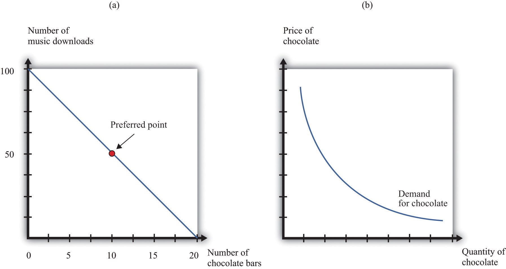Elasticity measures the proportionate change in one variable relative to the change in another variable. Consider, for example, the response of the quantity demanded to a change in the price. The price elasticity of demand is the percentage change in the quantity demanded divided by the percentage change in the price:
When the price increases (the percentage change in the price is positive), the quantity decreases, meaning that the percentage change in the quantity is negative. In other words, the law of demand tells us that the elasticity of demand is a negative number. For this reason we often use −(elasticity of demand) because we know this will always be a positive number.
We can use the idea of the elasticity of demand whether we are thinking about the demand curve faced by a firm or the market demand curve. The definition is the same in either case.
If we are analyzing the demand curve faced by a firm, then we sometimes refer to the elasticity of demand as the own-price elasticity of demand. It tells us how much the quantity demanded changes when the firm changes its price. If we are analyzing a market demand curve, then the price elasticity of demand tells us how the quantity demanded in the market changes when the price changes. Similarly, the price elasticity of supply tells us how the quantity supplied in a market changes when the price changes. The price elasticity of supply is generally positive because the supply curve slopes upward.
The income elasticity of demand is the percentage change in the quantity demanded divided by the percentage change in income. The income elasticity of demand for a good can be positive or negative.
The cross-price elasticity of demand tells us how the quantity demanded of one good changes when the price of another good changes.
In general, we can use elasticity whenever we want to show how one variable responds to changes in another variable.
The labor market is the market in which labor services are traded. Individual labor supply comes from the choices of individuals or households about how to allocate their time. As the real wage (the nominal wage divided by the price level) increases, households supply more hours to the market, and more households decide to participate in the labor market. Thus the quantity of labor supplied increases. The labor supply curve of a household is shifted by changes in wealth. A wealthier household supplies less labor at a given real wage.
Labor demand comes from firms. As the real wage increases, the marginal cost of hiring more labor increases, so each firm demands fewer hours of labor input—that is, a firm’s labor demand curve is downward sloping. The labor demand curve of a firm is shifted by changes in productivity. If labor becomes more productive, then the labor demand curve of a firm shifts rightward: the quantity of labor demanded is higher at a given real wage.
The labor market equilibrium is shown in Figure 31.2 "Labor Market Equilibrium". The real wage and the equilibrium quantity of labor traded are determined by the intersection of labor supply and labor demand. At the equilibrium real wage, the quantity of labor supplied equals the quantity of labor demanded.
Figure 31.2 Labor Market Equilibrium
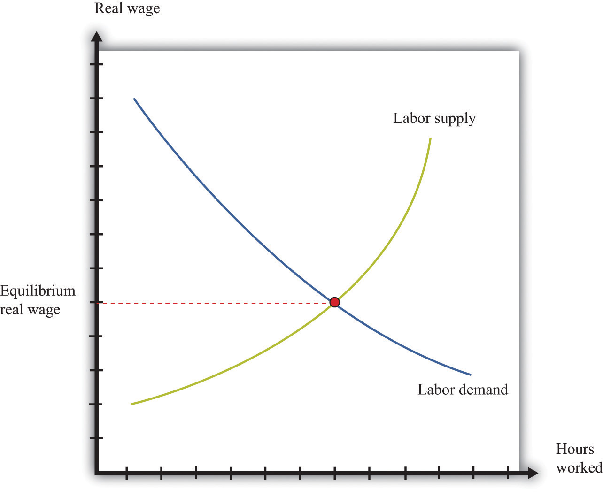Individuals make decisions that unfold over time. Because individuals choose how to spend income earned over many periods on consumption goods over many periods, they sometimes wish to save or borrow rather than spend all their income in every period.
Figure 31.3 "Choices over Time" shows examples of these choices over a two-year horizon. The individual earns income this year and next. The combinations of consumption that are affordable and that exhaust all of an individual’s income are shown on the budget line, which in this case is called an intertemporal budget constraint. The slope of the budget line is equal to (1 + real interest rate), which is equivalent to the real interest factor. The slope is the amount of consumption that can be obtained tomorrow by giving up a unit of consumption today.
The preferred point is also indicated; it is the combination of consumption this year and consumption next year that the individual prefers to all the points on the budget line. The individual in part (a) of Figure 31.3 "Choices over Time" is consuming less this year than she is earning: she is saving. Next year she can use her savings to consume more than her income. The individual in part (b) of Figure 31.3 "Choices over Time" is consuming more this year than he is earning: he is borrowing. Next year, his consumption will be less than his income because he must repay the amount borrowed this year.
When the real interest rate increases, individuals will borrow less and (usually) save more (the effect of interest rate changes on saving is unclear as a matter of theory because income effects and substitution effects act in opposite directions). Thus individual loan supply slopes upward.
Of course, individuals live for many periods and make frequent decisions on consumption and saving. The lifetime budget constraint is obtained using the idea of discounted present value:
discounted present value of lifetime income = discounted present value of lifetime consumption.The left side is a measure of all the disposable income the individual will receive over his lifetime (disposable means after taking into account taxes paid to the government and transfers received from the government). The right side calculates the value of consumption of all goods and services over an individual’s lifetime.
Figure 31.3 Choices over Time
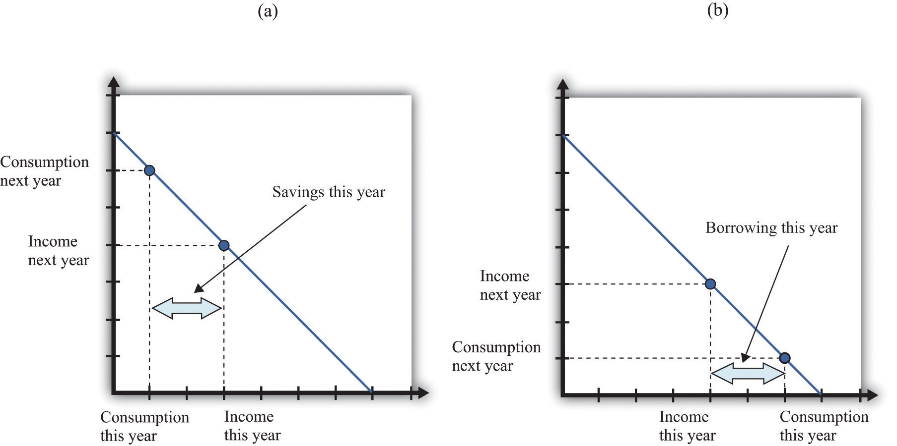Discounted present value is a technique used to add dollar amounts over time. We need this technique because a dollar today has a different value from a dollar in the future.
The discounted present value this year of $1.00 that you will receive next year is as follows:
If the nominal interest rate is 10 percent, then the nominal interest factor is 1.1, so $1 next year is worth $1/1.1 = $0.91 this year. As the interest rate increases, the discounted present value decreases.
More generally, we can compute the value of an asset this year from the following formula:
The flow benefit depends on the asset. For a bond, the flow benefit is a coupon payment. For a stock, the flow benefit is a dividend payment. For a fruit tree, the flow benefit is the yield of a crop.
If an asset (such as a bond) yields a payment next year of $10 and has a price next year of $90, then the “flow benefit from asset + price of the asset next year” is $100. The value of the asset this year is then If the nominal interest rate is 20 percent, then the value of the asset is $100/1.2 = 83.33.
We discount nominal flows using a nominal interest factor. We discount real flows (that is, flows already corrected for inflation) using a real interest factor, which is equal to (1 + real interest rate).
Denote the dividend on an asset in period t as Dt. Define Rt as the cumulative effect of interest rates up to period t. For example, R2 = (1 + r1)(1 + r2). Then the value of an asset that yields Dt dollars in every year up to year T is given by
If the interest rate is constant (equal to r), then the one period interest factor is R = 1 + r, and Rt = Rt.
The discounted present value tool is illustrated in Table 31.1 "Discounted Present Value with Different Interest Rates". The number of years (T) is set equal to 5. The table gives the value of the dividends in each year and computes the discounted present values for two different interest rates. For this example, the annual interest rates are constant over time.
Table 31.1 Discounted Present Value with Different Interest Rates
| Year | Dividend ($) | Discounted Present Value with R = 1.05 ($) | Discounted Present Value with R = 1.10 ($) |
|---|---|---|---|
| 1 | 100 | 100 | 100 |
| 2 | 100 | 95.24 | 90.91 |
| 3 | 90 | 81.63 | 74.38 |
| 4 | 120 | 103.66 | 90.16 |
| 5 | 400 | 329.08 | 273.20 |
| Discounted present value | 709.61 | 628.65 |
An individual’s choices over time determine how much he or she will borrow or lend. In particular, individual loan supply is upward sloping: when the real interest rate increases, a typical household will supply a greater quantity of funds to the credit market. Market loan supply is obtained by adding together the individual loan supplies of everyone in an economy. We use the terms “credit” and “loans” interchangably.
The demand for credit comes from households and firms that are borrowing. Market loan demand is obtained by adding together all the individual demands for loans. When real interest rates increase, borrowing is more expensive, so the quantity of loans demanded decreases. That is, loan demand obeys the law of demand.
Borrowers and lenders interact in the credit market (or loan market), which is illustrated in Figure 31.4 "The Credit Market (or Loan Market)". Credit market equilibrium occurs at the real interest rate where the quantity of loans supplied equals the quantity of loans demanded. At this equilibrium real interest rate, lenders lend as much as they wish, and borrowers can borrow as much as they wish. All gains from trade through loans are exhausted in equilibrium.
Figure 31.4 The Credit Market (or Loan Market)
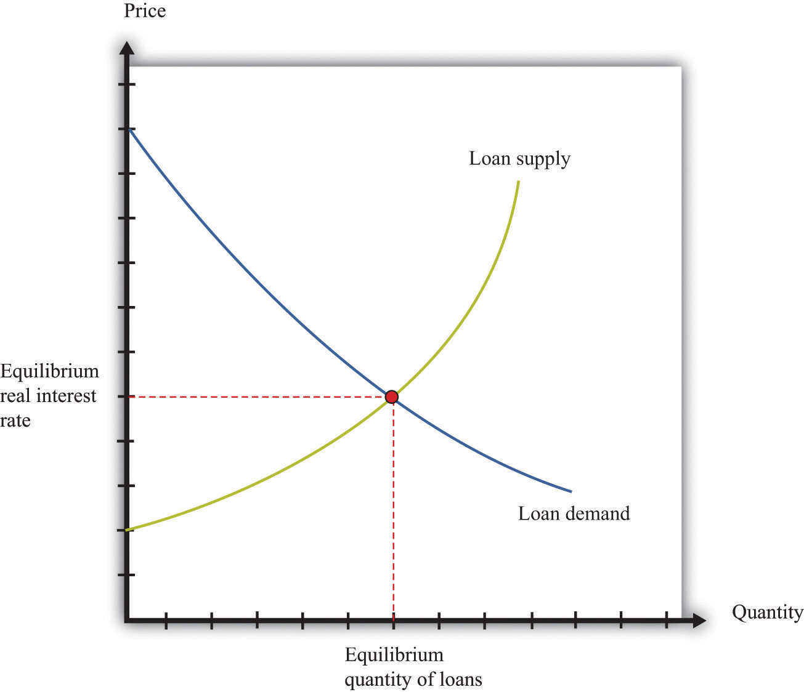Probability is the percentage chance that something will occur. For example, there is a 50 percent chance that a tossed coin will come up heads. We say that the probability of getting the outcome “heads” is 1/2. There are five things you need to know about probability:
The expected value of a situation with financial risk is a measure of how much you would expect to win (or lose) on average if the situation were to be replayed a large number of times. You can calculate expected value as follows:
For example, suppose you are offered the following proposal. Roll a six-sided die. If it comes up with 1 or 2, you get $90. If it comes up 3, 4, 5, or 6, you get $30. The expected value is
(1/3) × $90 + (2/3) × $30 = $50.Most people dislike risk. They prefer a fixed sum of money to a gamble that has the same expected value. Risk aversion is a measure of how much people want to avoid risk. In the example we just gave, most people would prefer a sure $50 to the uncertain proposal with the expected value of $50.
Suppose we present an individual with the following gamble:
The expected value of this gamble is −$10. Now ask the individual how much she would pay to avoid this gamble. Someone who is risk-neutral would be willing to pay only $10. Someone who is risk-averse would be willing to pay more than $10. The more risk-averse an individual, the more the person would be willing to pay.
The fact that risk-averse people will pay to shed risk is the basis of insurance. If people have different attitudes toward risky gambles, then the less risk-averse individual can provide insurance to the more risk-averse individual. There are gains from trade. Insurance is also based on diversification, which is the idea that people can share their risks so it is much less likely that any individual will face a large loss.
Consider a gamble where there are three and only three possible outcomes (x, y, z) that occur with probabilities Pr(x), Pr(y), and Pr(z). Think of these outcomes as the number of dollars you get in each case. First, we know that
Pr(x) + Pr(y) + Pr(z) = 1.Second, the expected value of this gamble is
EV = (Pr(x)*x) + (Pr(y)*y) + (Pr(z)*z).If you have some data expressed in nominal terms (for example, in dollars), and you want to convert them to real terms, you should use the following four steps.
Table 31.2 "Correcting Nominal Sales for Inflation" shows an example. We have data on the CPI for three years, as listed in the second column. The price index is created using the year 2000 as a base year, following steps 1–3. Sales measured in millions of dollars are given in the fourth column. To correct for inflation, we divide sales in each year by the value of the price index for that year. The results are shown in the fifth column. Because there was inflation each year (the price index is increasing over time), real sales do not increase as rapidly as nominal sales.
Table 31.2 Correcting Nominal Sales for Inflation
| Year | CPI | Price Index (2000 Base) | Sales (Millions) | Real Sales (Millions of Year 2000 Dollars) |
|---|---|---|---|---|
| 2000 | 172.2 | 1.0 | 21.0 | 21.0 |
| 2001 | 177.1 | 1.03 | 22.3 | 21.7 |
| 2002 | 179.9 | 1.04 | 22.9 | 21.9 |
Source: Bureau of Labor Statistics for the Consumer Price Index
This calculation uses the CPI, which is an example of a price index. To see how a price index like the CPI is constructed, consider Table 31.3 "Constructing a Price Index", which shows a very simple economy with three goods: T-shirts, music downloads, and meals. The prices and quantities purchased in the economy in 2012 and 2013 are summarized in the table.
Table 31.3 Constructing a Price Index
| Year | T-shirts | Music Downloads | Meals | Cost of 2013 Basket | Price Index | |||
|---|---|---|---|---|---|---|---|---|
| Price ($) | Quantity | Price ($) | Quantity | Price ($) | Quantity | Price ($) | ||
| 2012 | 20 | 10 | 1 | 50 | 25 | 6 | 425 | 1.00 |
| 2013 | 22 | 12 | 0.80 | 60 | 26 | 5 | 442 | 1.04 |
To construct a price index, you must choose a fixed basket of goods. For example, we could use the goods purchased in 2013 (12 T-shirts, 60 downloads, and 5 meals). This fixed basket is then priced in different years. To construct the cost of the 2013 basket at 2013 prices, the product of the price and the quantity purchased for each good in 2013 is added together. The basket costs $442. Then we calculate the cost of the 2013 basket at 2012 prices: that is, we use the prices of each good in 2012 and the quantities purchased in 2013. The sum is $425. The price index is constructed using 2012 as a base year. The value of the price index for 2013 is the cost of the basket in 2013 divided by its cost in the base year (2012).
When the price index is based on a bundle of goods that represents total output in an economy, it is called the price level. The CPI and gross domestic product (GDP) deflator are examples of measures of the price level (they differ in terms of exactly which goods are included in the bundle). The growth rate of the price level (its percentage change from one year to the next) is called the inflation rate.
We also correct interest rates for inflation. The interest rates you typically see quoted are in nominal terms: they tell you how many dollars you will have to repay for each dollar you borrow. This is called a nominal interest rate. The real interest rate tells you how much you will get next year, in terms of goods and services, if you give up a unit of goods and services this year. To correct interest rates for inflation, we use the Fisher equation:
real interest rate ≈ nominal interest rate − inflation rate.For more details, see Section 31.25 "The Fisher Equation: Nominal and Real Interest Rates" on the Fisher equation.
The supply-and-demand framework is the most fundamental framework in economics. It explains both the price of a good or a service and the quantity produced and purchased.
The market supply curve comes from adding together the individual supply curves of firms in a particular market. A competitive firm, taking prices as given, will produce at a level such that
price = marginal cost.Marginal cost usually increases as a firm produces more output. Thus an increase in the price of a product creates an incentive for firms to produce more—that is, the supply curve of a firm is upward sloping. The market supply curve slopes upward as well: if the price increases, all firms in a market will produce more output, and some new firms may also enter the market.
A firm’s supply curve shifts if there are changes in input prices or the state of technology. The market supply curve is shifted by changes in input prices and changes in technology that affect a significant number of the firms in a market.
The market demand curve comes from adding together the individual demand curves of all households in a particular market. Households, taking the prices of all goods and services as given, distribute their income in a manner that makes them as well off as possible. This means that they choose a combination of goods and services preferred to any other combination of goods and services they can afford. They choose each good or service such that
price = marginal valuation.Marginal valuation usually decreases as a household consumes more of a product. If the price of a good or a service decreases, a household will substitute away from other goods and services and toward the product that has become cheaper—that is, the demand curve of a household is downward sloping. The market demand curve slopes downward as well: if the price decreases, all households will demand more.
The household demand curve shifts if there are changes in income, prices of other goods and services, or tastes. The market demand curve is shifted by changes in these factors that are common across a significant number of households.
A market equilibrium is a price and a quantity such that the quantity supplied equals the quantity demanded at the equilibrium price (Figure 31.5 "Market Equilibrium"). Because market supply is upward sloping and market demand is downward sloping, there is a unique equilibrium price. We say we have a competitive market if the following are true:
A competitive market is typically characterized by an absence of barriers to entry, so new firms can readily enter the market if it is profitable, and existing firms can easily leave the market if it is not profitable.
Figure 31.5 Market Equilibrium
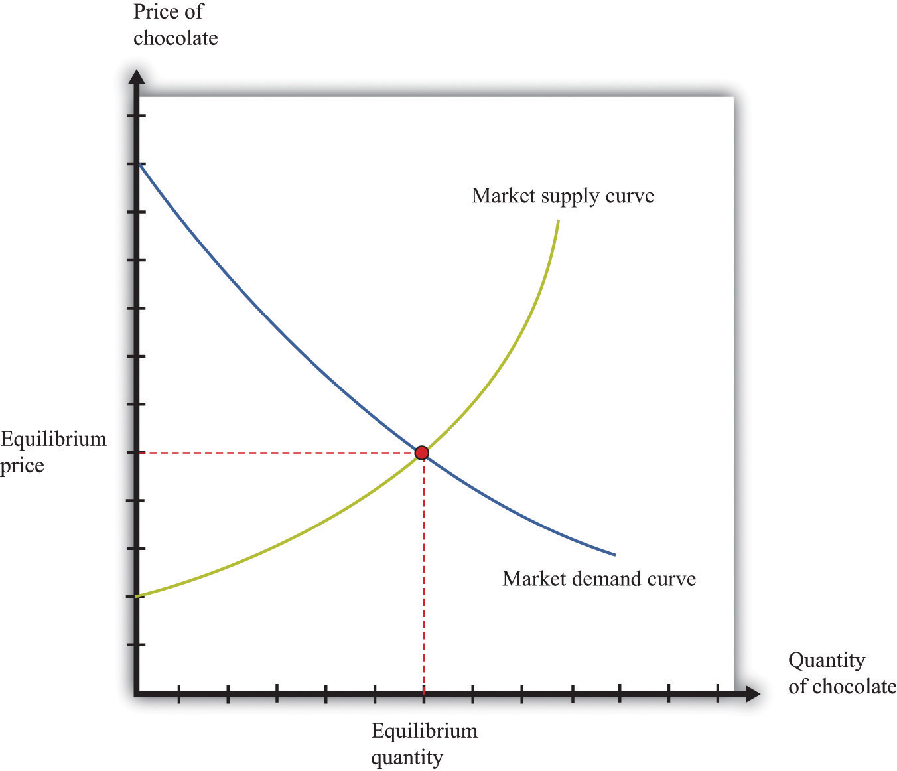Figure 31.5 "Market Equilibrium" shows equilibrium in the market for chocolate bars. The equilibrium price is determined at the intersection of the market supply and market demand curves.
If we let p denote the price, qd the quantity demanded, and I the level of income, then the market demand curve is given by
qd = a − bp + cI,where a, b, and c are constants. By the law of demand, b > 0. For a normal good, the quantity demanded increases with income: c > 0.
If we let qs denote the quantity supplied and t the level of technology, the market supply curve is given by
qs = d + ep + ft,where d, e, and f are constants. Because the supply curve slopes upward, e > 0. Because the quantity supplied increases when technology improves, f > 0.
In equilibrium, the quantity supplied equals the quantity demanded. Set qs = qd = q* and set p = p* in both equations. The market clearing price (p*) and quantity (q*) are as follows:
and
q* = d + ep* + ft.If you buy a good, then you obtain buyer surplus. If you did not expect to obtain any surplus, then you would not choose to buy the good.
If you sell a good, then you obtain seller surplus. If you did not expect to obtain any surplus, you would not sell the good.
Buyer surplus and seller surplus are created by trade in a competitive market (Figure 31.6 "A Competitive Market"). The equilibrium price and the equilibrium quantity are determined by the intersection of the supply and demand curves. The area below the demand curve and above the price is the buyer surplus; the area above the supply curve and below the price is the seller surplus. The sum of the buyer surplus and the seller surplus is called total surplus or the gains from trade.
Buyer surplus and seller surplus can also arise from individual bargaining (Figure 31.7 "Individual Bargaining"). When a single unit is traded (the case of unit demand and unit supply), the total surplus is the difference between the buyer’s valuation and the seller’s valuation. Bargaining determines how they share the gains from trade. The quantity of trades, indicated on the horizontal axis, is either zero or one. The valuations of the buyer and the seller are shown on the vertical axis. In this case, the valuation of the buyer ($3,000) exceeds the valuation of the seller ($2,000), indicating that there are gains from trade equal to $1,000. How these gains are shared between the buyer and seller depends on the price they agree on. In part (a) of Figure 31.7 "Individual Bargaining", the buyer gets most of the surplus; in part (b) of Figure 31.7 "Individual Bargaining", the seller gets most of the surplus.
Figure 31.6 A Competitive Market
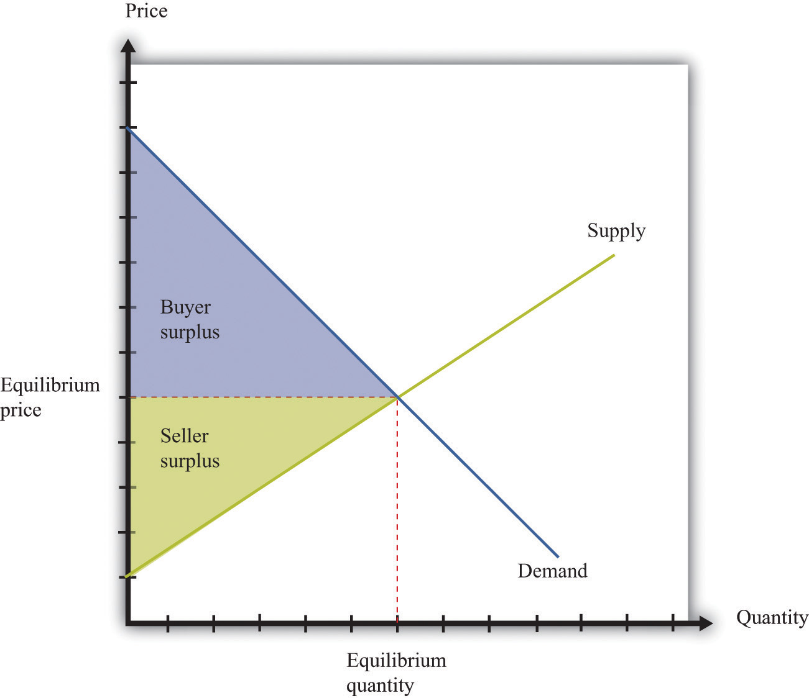Figure 31.7 Individual Bargaining
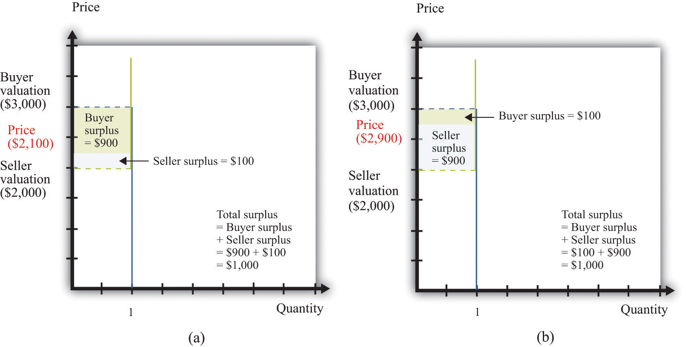The outcome of a competitive market has a very important property. In equilibrium, all gains from trade are realized. This means that there is no additional surplus to obtain from further trades between buyers and sellers. In this situation, we say that the allocation of goods and services in the economy is efficient. However, markets sometimes fail to operate properly and not all gains from trade are exhausted. In this case, some buyer surplus, seller surplus, or both are lost. Economists call this a deadweight loss.
The deadweight loss from a monopoly is illustrated in Figure 31.8 "Deadweight Loss". The monopolist produces a quantity such that marginal revenue equals marginal cost. The price is determined by the demand curve at this quantity. A monopoly makes a profit equal to total revenue minus total cost. When the total output is less than socially optimal, there is a deadweight loss, which is indicated by the red area in Figure 31.8 "Deadweight Loss".
Deadweight loss arises in other situations, such as when there are quantity or price restrictions. It also arises when taxes or subsidies are imposed in a market. Tax incidence is the way in which the burden of a tax falls on buyers and sellers—that is, who suffers most of the deadweight loss. In general, the incidence of a tax depends on the elasticities of supply and demand.
A tax creates a difference between the price paid by the buyer and the price received by the seller (Figure 31.9 "Tax Burdens"). The burden of the tax and the deadweight loss are defined relative to the tax-free competitive equilibrium. The tax burden borne by the buyer is the difference between the price paid under the tax and the price paid in the competitive equilibrium. Similarly, the burden of the seller is the difference between the price in the competitive equilibrium and the price received under the equilibrium with taxes. The burden borne by the buyer is higher—all else being the same—if demand is less elastic. The burden borne by the seller is higher—all else being the same—if supply is less elastic.
The deadweight loss from the tax measures the sum of the buyer’s lost surplus and the seller’s lost surplus in the equilibrium with the tax. The total amount of the deadweight loss therefore also depends on the elasticities of demand and supply. The smaller these elasticities, the closer the equilibrium quantity traded with a tax will be to the equilibrium quantity traded without a tax, and the smaller is the deadweight loss.
Figure 31.8 Deadweight Loss
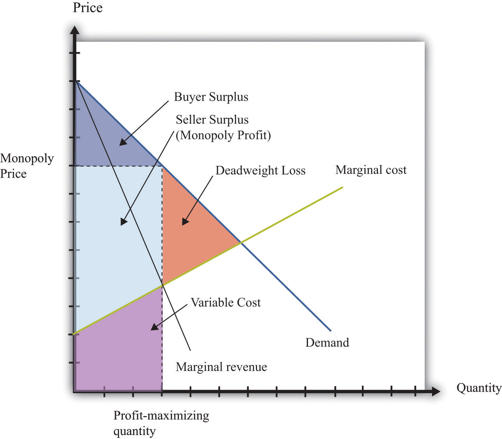Figure 31.9 Tax Burdens
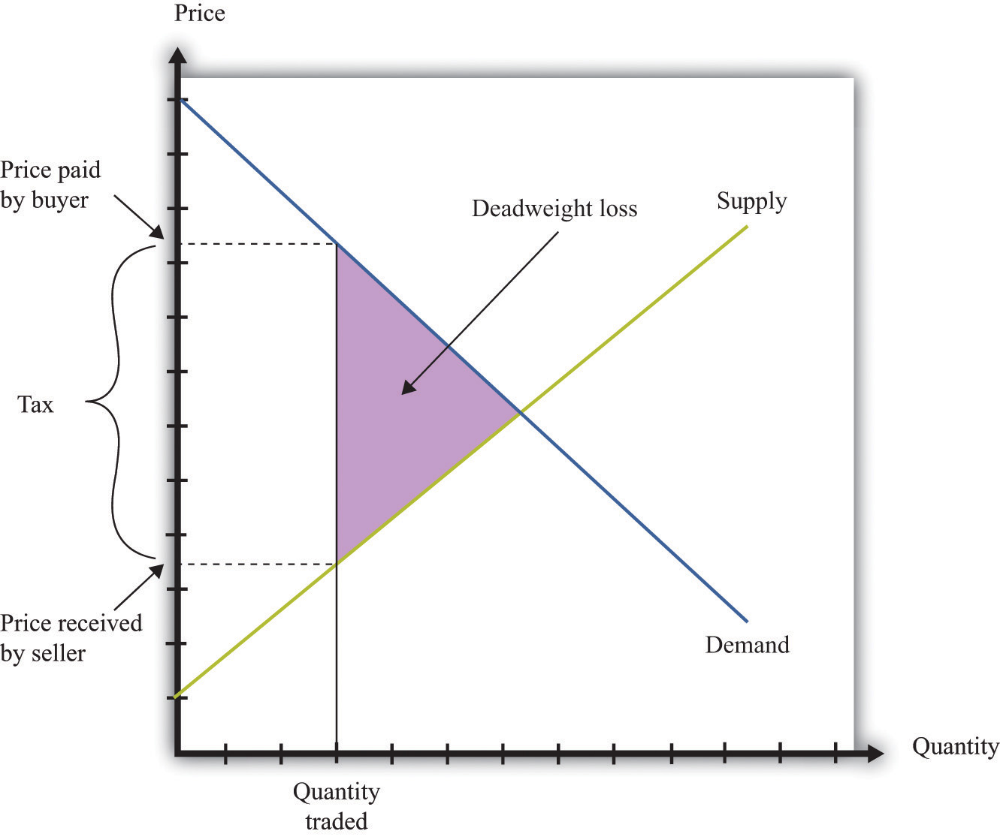The production possibilities frontier shows the combinations of goods and services that an economy can produce if it is efficiently using every available input. A key component in understanding the production possibilities frontier is the term efficiently. If an economy is using its inputs in an efficient way, then it is not possible to produce more of one good without producing less of another.
Figure 31.10 "The Production Possibilities Frontier" shows the production possibilities frontier for an economy producing web pages and meals. It is downward sloping: to produce more web pages, the production of meals must decrease. Combinations of web pages and meals given by points inside the production possibilities frontier are possible for the economy to produce but are not efficient: at points inside the production possibilities frontier, it is possible for the economy to produce more of both goods. Points outside the production possibilities frontier are not feasible given the current levels of inputs in the economy and current technology.
The negative slope of the production possibilities frontier reflects opportunity cost. The opportunity cost of producing more meals is that fewer web pages can be created. Likewise, the opportunity cost of creating more web pages means that fewer meals can be produced.
The production possibilities frontier shifts over time. If an economy accumulates more physical capital or has a larger workforce, then it will be able to produce more of all the goods in an economy. Further, it will be able to produce new goods. Another factor shifting the production possibilities frontier outward over time is technology. As an economy creates new ideas (or receives them from other countries) on how to produce goods more cheaply, then it can produce more goods.
Figure 31.10 The Production Possibilities Frontier
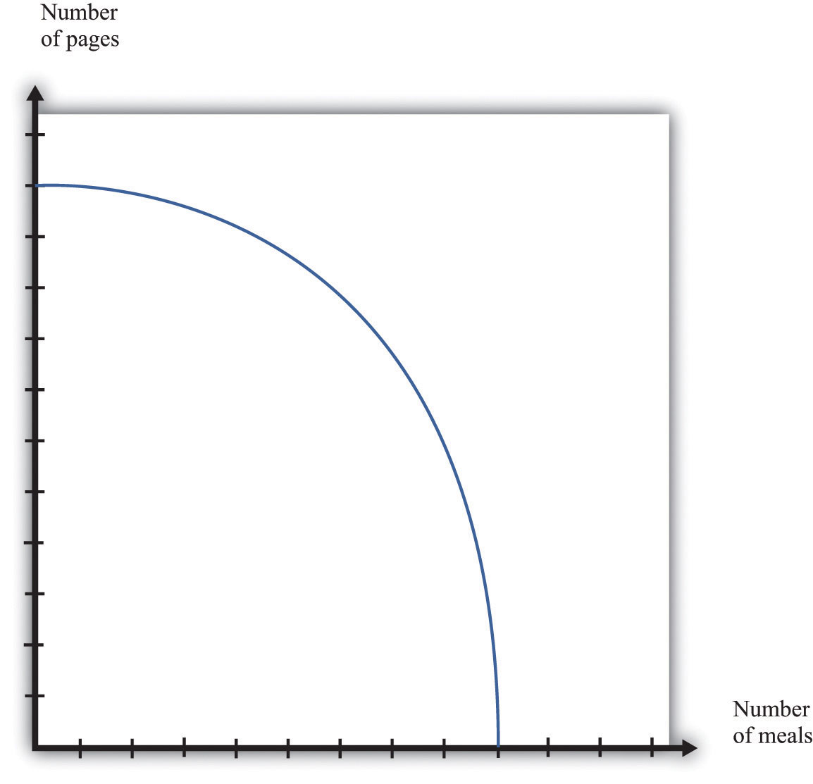Comparative advantage explains why individuals and countries trade with each other. Trade is at the heart of modern economies: individuals specialize in production and generalize in consumption. To consume many goods while producing relatively few, individuals must sell what they produce in exchange for the output of others. Countries likewise specialize in certain goods and services and import others. By so doing, they obtain gains from trade.
Table 31.4 "Hours of Labor Required" shows the productivity of two different countries in the production of two different goods. It shows the number of labor hours required to produce two goods—tomatoes and beer—in two countries: Guatemala and Mexico. From these data, Mexico has an absolute advantage in the production of both goods. Workers in Mexico are more productive at producing both tomatoes and beer in comparison to workers in Guatemala.
Table 31.4 Hours of Labor Required
| Tomatoes (1 Kilogram) | Beer (1 Liter) | |
|---|---|---|
| Guatemala | 6 | 3 |
| Mexico | 2 | 2 |
In Guatemala, the opportunity cost of 1 kilogram of tomatoes is 2 liters of beer. To produce an extra kilogram of tomatoes in Guatemala, 6 hours of labor time must be taken away from beer production; 6 hours of labor time is the equivalent of 2 liters of beer. In Mexico, the opportunity cost of 1 kilogram of tomatoes is 1 liter of beer. Thus the opportunity cost of producing tomatoes is lower in Mexico than in Guatemala. This means that Mexico has a comparative advantage in the production of tomatoes. By a similar logic, Guatemala has a comparative advantage in the production of beer.
Guatemala and Mexico can have higher levels of consumption of both beer and tomatoes if they trade rather than produce in isolation; each country should specialize (either partially or completely) in the good in which it has a comparative advantage. It is never efficient to have both countries produce both goods.
The costs of production for a firm are split into two categories. One type of cost, fixed costs, is independent of a firm’s output level. A second type of cost, variable costs, depends on a firm’s level of output. Total costs are the sum of the fixed costs and the variable costs.
The change in costs as output changes by a small amount is called marginal cost. It is calculated as follows:
Because fixed costs do not depend on the quantity, if we produce one more unit, then the change in total cost and the change in the variable cost are the same. Marginal cost is positive because variable costs increase with output. Marginal cost is usually increasing in the level of output, reflecting the diminishing marginal product of factors of production.
For example, suppose that total costs are given by
total costs = 50 + 10 × quantity.Here the fixed cost is 50, and the variable cost is 10 times the level of output. In this example, marginal cost equals 10. These costs are shown in Table 31.5.
Table 31.5
| Output | Fixed Cost | Variable Cost | Total Cost |
|---|---|---|---|
| 0 | 50 | 0 | 50 |
| 10 | 50 | 100 | 150 |
| 20 | 50 | 200 | 250 |
| 50 | 50 | 500 | 550 |
We sometimes divide fixed costs into two components: entry costs, which are the one-time fixed costs required to open a new business or set up a new plant, and fixed operating costs, which are the fixed costs incurred regularly during the normal operation of a business.
Some costs are sunk costs; once incurred, these costs cannot be recovered. Such costs should be ignored in forward-looking business decisions. Other costs are partially or fully recoverable costs. For example, if a firm purchases an asset that can be resold, then the cost of that asset is recoverable.
Figure 31.11 Cost Measures
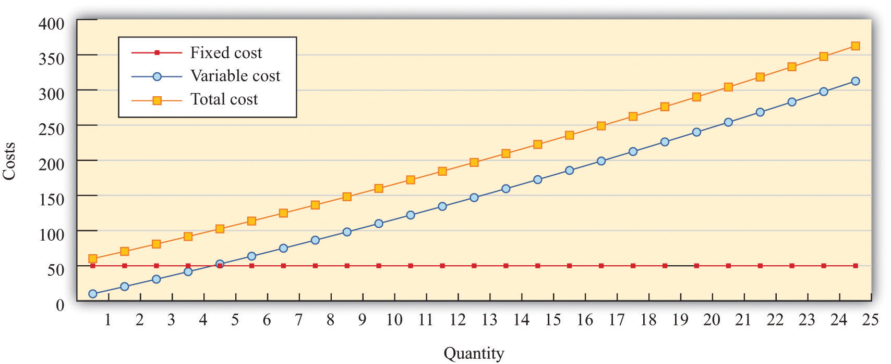Figure 31.11 "Cost Measures" shows these various measures of costs. It is drawn assuming a fixed cost of 50 and variable costs given by
variable costs = 10 × quantity + 0.1 × quantity2.For this example, marginal cost is positive and increasing.
The goal of the managers of a firm is to maximize the firm’s profit.
profit = revenues − costs.We can think of a firm as choosing either the price to set or the quantity that it sells. Either way, the firm faces a demand curve and chooses a point on that curve that maximizes its profits. In reality, most firms choose the price of the good that they sell. However, it is often simpler to analyze a firm’s behavior by looking at the quantity that it chooses.
Profits are maximized (Figure 31.12 "Markup Pricing") when the extra revenue from selling one more unit of output (marginal revenue) is equal to the extra cost of producing one more unit (marginal cost). The firm’s decision rule is to select a point on the demand curve such that
marginal revenue = marginal cost.We can rearrange this condition to obtain a firm’s pricing rule:
price = markup × marginal cost.Figure 31.12 "Markup Pricing" illustrates this pricing decision. The markup depends on the price elasticity of demand. When demand is relatively inelastic, firms have a lot of market power and set a high markup. This is not a “plug-and-play” formula because both the markup and marginal cost depend, in general, on the price that a firm chooses. However, it does provide a useful description of a firm’s decision.
Figure 31.12 Markup Pricing
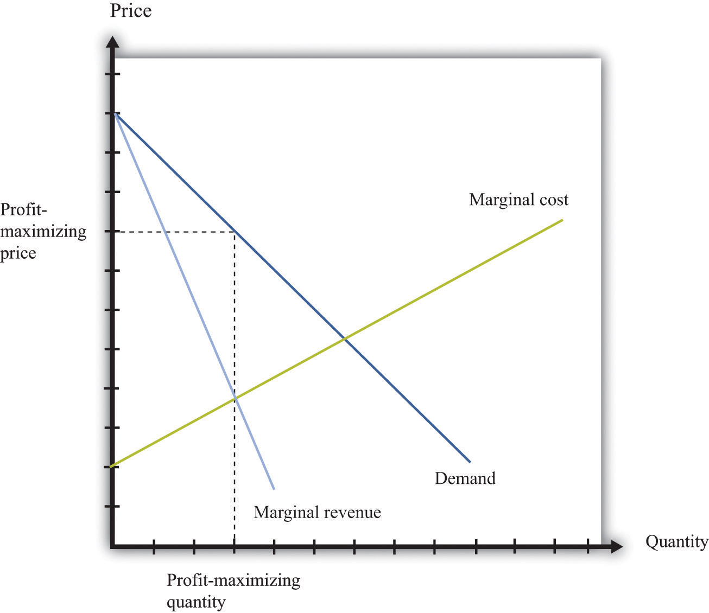We can derive the markup pricing formula as follows, where π = profit, R = revenues, C = costs, MR = marginal revenue, MC = marginal cost, P = price, Q = output, ε = (ΔQ/Q)/(ΔP/P) = elasticity of demand, and µ = markup.
First we note that
The firm sets marginal revenue equal to marginal cost:
Rearranging, we obtain
P = µ × MC,where the markup is given by
Comparative statics is a tool used to predict the effects of exogenous variables on market outcomes. Exogenous variables shift either the market demand curve (for example, news about the health effects of consuming a product) or the market supply curve (for example, weather effects on a crop). By market outcomes, we mean the equilibrium price and the equilibrium quantity in a market. Comparative statics is a comparison of the market equilibrium before and after a change in an exogenous variable.
A comparative statics exercise consists of a sequence of five steps:
Figure 31.13 "A Shift in the Demand Curve" and Figure 31.14 "A Shift in the Supply Curve" show comparative statics in action in the market for Curtis Granderson replica shirts and the market for beer. In Figure 31.13 "A Shift in the Demand Curve", the market demand curve has shifted leftward. The consequence is that the equilibrium price and the equilibrium quantity both decrease. The demand curve shifts along a fixed supply curve. In Figure 31.14 "A Shift in the Supply Curve", the market supply curve has shifted leftward. The consequence is that the equilibrium price increases and the equilibrium quantity decreases. The supply curve shifts along a fixed demand curve.
Figure 31.13 A Shift in the Demand Curve
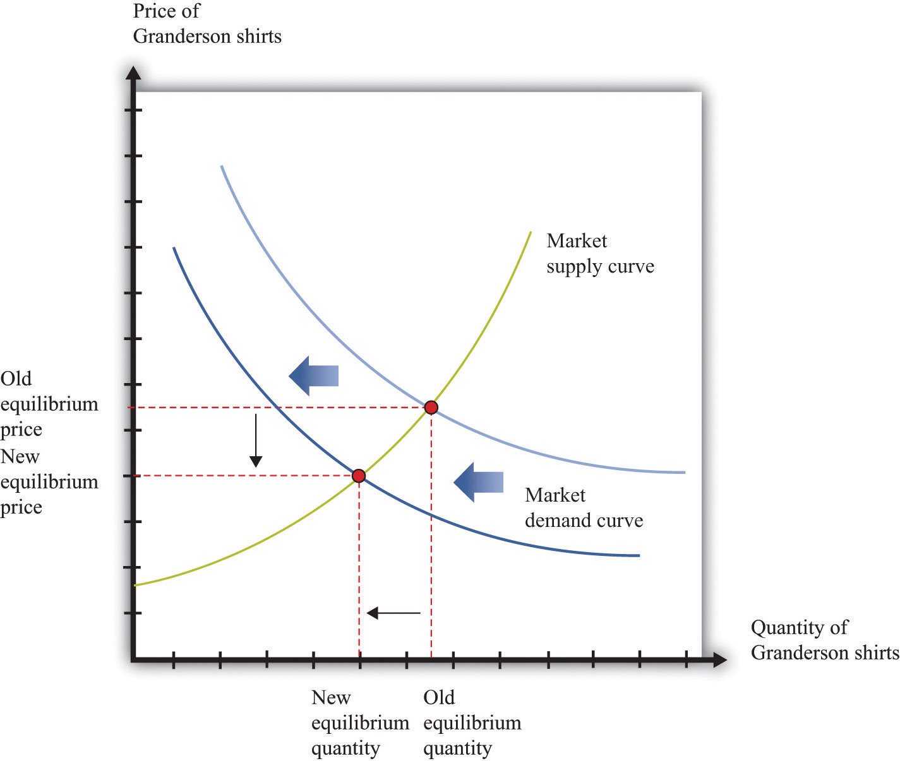Figure 31.14 A Shift in the Supply Curve
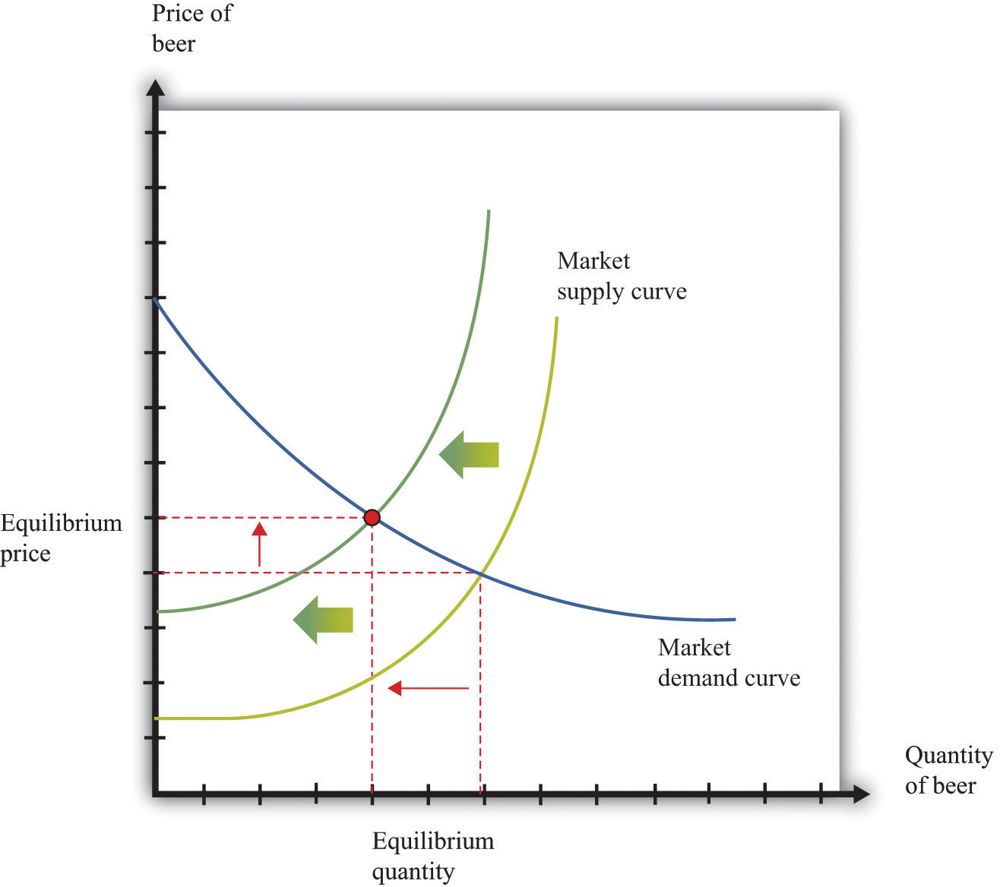The production function characterizes the output of a firm given the inputs it uses. The link between inputs and output is shown Figure 31.15 "The Production Function". The production function combines a firm’s physical capital stock, labor, raw materials (or intermediate inputs), and technology to produce output. Technology is the knowledge (the “blueprints”) that the firm possesses, together with managerial skills.
Production functions generally have two important properties:
By input, we mean any of the factors of production, such as physical capital, labor, or raw materials. The marginal product of an input is the extra output obtained if extra input is used. In this conceptual exercise, all other inputs are held fixed so that we change only one input at a time.
The first property asserts that additional output will be obtained from additional units of an input. Adding another machine, another worker, some more fuel, and so on, increases the output of a firm. A positive marginal product does not necessarily mean that the extra output is profitable: it might be that the cost of the extra input is high relative to the value of the additional output obtained.
The second property explains how the marginal product of an input changes as we increase the amount of that input, keeping the quantities of other inputs fixed. An additional unit of an input will (usually) increase output more when there is a small (rather than a large) amount of that input being used. For example, the extra output obtained from adding the first machine is greater than the additional output obtained from adding the 50th machine.
A simple production function relating output to labor input is shown in Figure 31.16 "Labor Input in the Production Function". This figure illustrates the two properties of positive and diminishing marginal product of labor. As more labor is added, output increases: there is a positive marginal product of labor (that is, the slope of the relationship is positive). But the extra output obtained from adding labor is greater when the labor input is low: there is diminishing marginal product of labor. From the graph, the slope of the production function (which is the marginal product of labor) is greater at low levels of the labor input.
Figure 31.15 The Production Function
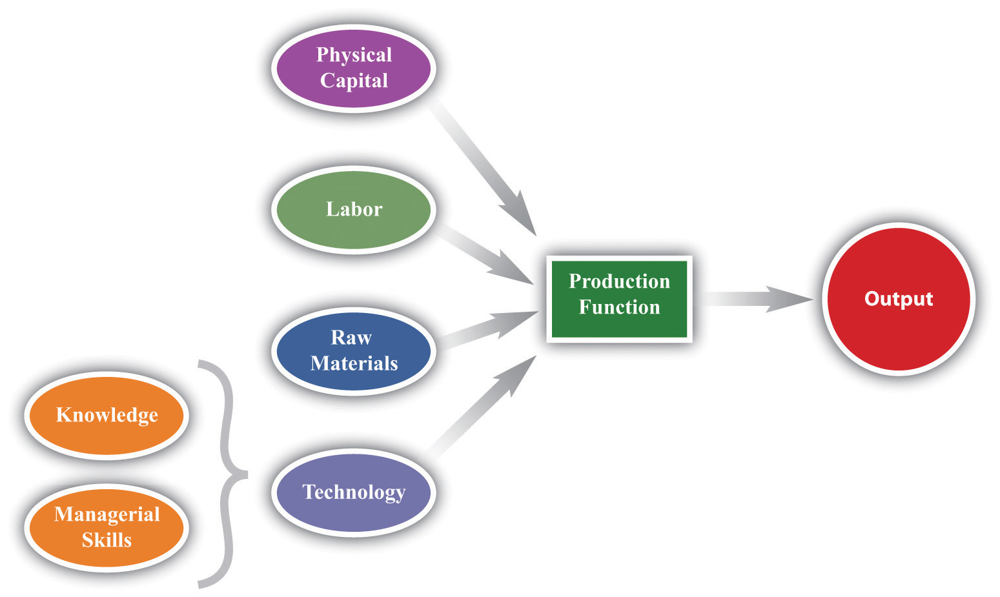Figure 31.16 Labor Input in the Production Function
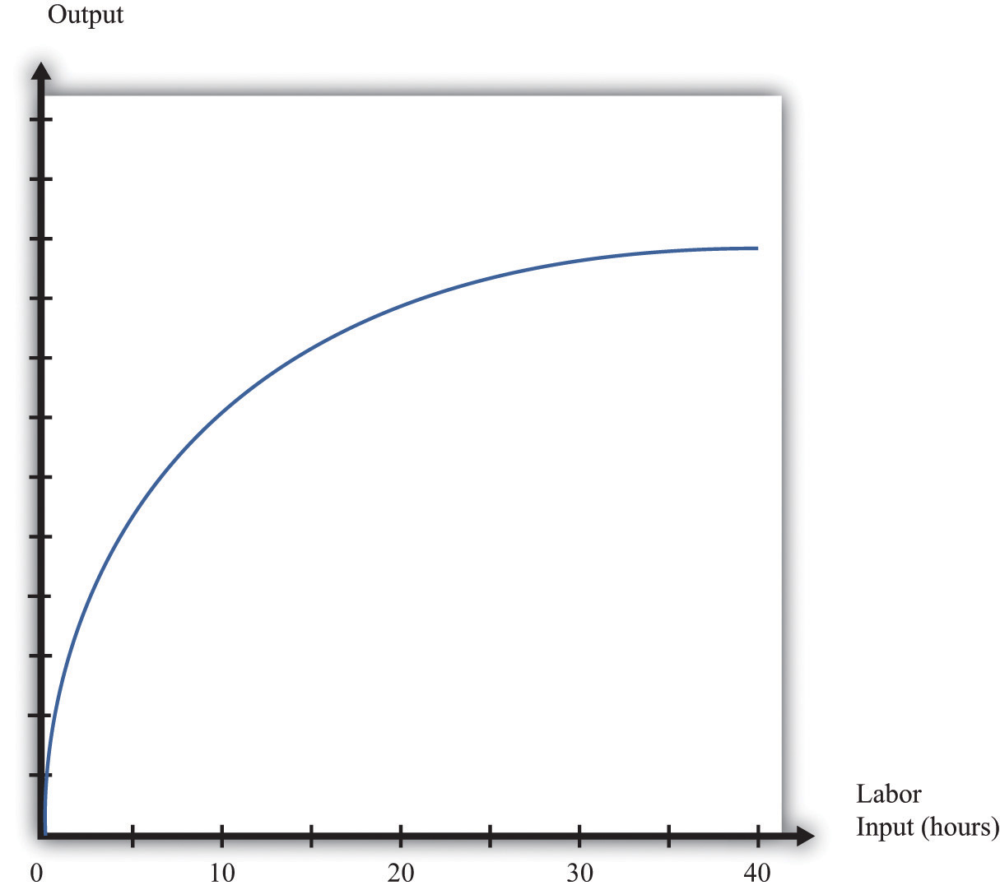A Nash equilibrium is used to predict the outcome of a game. By a game, we mean the interaction of a few individuals, called players. Each player chooses an action and receives a payoff that depends on the actions chosen by everyone in the game.
A Nash equilibrium is an action for each player that satisfies two conditions:
Thus a Nash equilibrium has two dimensions. Players make decisions that are in their own self-interests, and players make accurate predictions about the actions of others.
Consider the games in Table 31.6 "Prisoners’ Dilemma", Table 31.7 "Dictator Game", Table 31.8 "Ultimatum Game", and Table 31.9 "Coordination Game". The numbers in the tables give the payoff to each player from the actions that can be taken, with the payoff of the row player listed first.
Table 31.6 Prisoners’ Dilemma
| Left | Right | |
|---|---|---|
| Up | 5, 5 | 0, 10 |
| Down | 10, 0 | 2, 2 |
Table 31.7 Dictator Game
| Number of dollars (x) | 100 − x, x |
Table 31.8 Ultimatum Game
| Accept | Reject | |
|---|---|---|
| Number of dollars (x) | 100 − x, x | 0, 0 |
Table 31.9 Coordination Game
| Left | Right | |
|---|---|---|
| Up | 5, 5 | 0, 1 |
| Down | 1, 0 | 4, 4 |
We describe a game with three players (1, 2, 3), but the idea generalizes straightforwardly to situations with any number of players. Each player chooses a strategy (s1, s2, s3). Suppose σ1(s1, s2, s3) is the payoff to player 1 if (s1, s2, s3) is the list of strategies chosen by the players (and similarly for players 2 and 3). We put an asterisk (*) to denote the best strategy chosen by a player. Then a list of strategies (s*1, s*2, s*3) is a Nash equilibrium if the following statements are true:
σ1(s*1, s*2, s*3) ≥ σ1(s1, s*2, s*3) σ2(s*1, s*2, s*3) ≥ σ2(s*1, s2, s*3) σ3(s*1, s*2, s*3) ≥ σ3(s*1, s*2, s3)In words, the first condition says that, given that players 2 and 3 are choosing their best strategies (s*2, s*3), then player 1 can do no better than to choose strategy s*1. If a similar condition holds for every player, then we have a Nash equilibrium.
Some economic transactions have effects on individuals not directly involved in that transaction. When this happens, we say there is an externality present. An externality is generated by a decision maker who disregards the effects of his actions on others. In the case of a positive externality, the individual’s actions increase the welfare of others (for example, research and development by firms). In the case of a negative externality, an individual’s actions decrease the welfare of others (for example, pollution).
Economic outcomes are not efficient when externalities are present. So the government may be able to improve on the private outcome. The possible remedies are as follows:
If people are altruistic, then they may instead take into account others’ welfare and may internalize some of the effects of their actions.
We typically see externalities associated with nonexcludable goods (or resources)—goods for which it is impossible to selectively deny access. In other words, it is not possible to let some people consume the good while preventing others from consuming it. An excludable good (or resource) is one to which we can selectively allow or deny access. If a good is nonexcludable or partially excludable, there are positive externalities associated with its production and negative externalities associated with its consumption.
We say that a good is a rival if one person’s consumption of the good prevents others from consuming the good. Most of the goods we deal with in economics are rival goods. A good is nonrival if one person can consume the good without preventing others from consuming the same good. Knowledge is a nonrival good.
If a good is both nonexcludable and nonrival, it is a public good.
A foreign exchange market is where one currency is traded for another. There is a demand for each currency and a supply of each currency. In these markets, one currency is bought using another. The price of one currency in terms of another (for example, how many dollars it costs to buy one Mexican peso) is called the exchange rate.
Foreign currencies are demanded by domestic households, firms, and governments that wish to purchase goods, services, or financial assets denominated in the currency of another economy. For example, if a US auto importer wants to buy a German car, the importer must buy euros. The law of demand holds: as the price of a foreign currency increases, the quantity of that currency demanded will decrease.
Foreign currencies are supplied by foreign households, firms, and governments that wish to purchase goods, services, or financial assets denominated in the domestic currency. For example, if a Canadian bank wants to buy a US government bond, the bank must sell Canadian dollars. As the price of a foreign currency increases, the quantity supplied of that currency increases.
Exchange rates are determined just like other prices—by the interaction of supply and demand. At the equilibrium exchange rate, the supply and demand for a currency are equal. Shifts in the supply or the demand for a currency lead to changes in the exchange rate. Because one currency is exchanged for another in a foreign exchange market, the demand for one currency entails the supply of another. Thus the dollar market for euros (where the price is dollars per euro and the quantity is euros) is the mirror image of the euro market for dollars (where the price is euros per dollar and the quantity is dollars).
To be concrete, consider the demand for and the supply of euros. The supply of euros comes from the following:
The demand for euros comes from the following:
Figure 31.17 "The Foreign Exchange Market" shows the dollar market for euros. On the horizontal axis is the quantity of euros traded. On the vertical axis is the price in terms of dollars. The intersection of the supply and demand curves determines the equilibrium exchange rate.
Figure 31.17 The Foreign Exchange Market
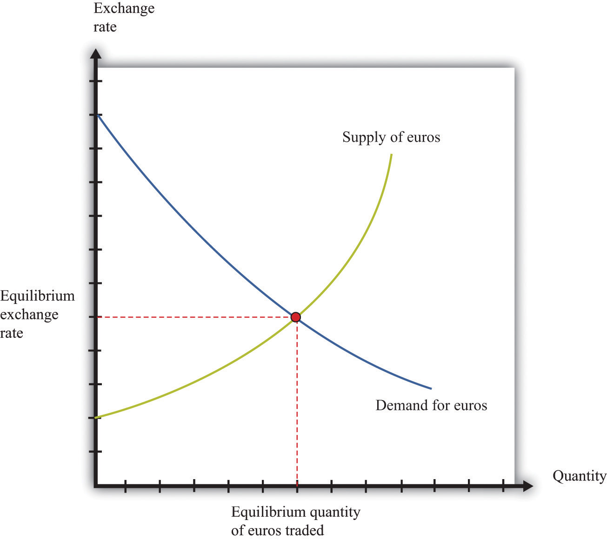The foreign exchange market can be used as a basis for comparative statics exercises. We can study how changes in an economy affect the exchange rate. For example, suppose there is an increase in the level of economic activity in the United States. This leads to an increase in the demand for European goods and services. To make these purchases, US households and firms will demand more euros. This causes an outward shift in the demand curve and an increase in the dollar price of euros.
When the dollar price of a euro increases, we say that the dollar has depreciated relative to the euro. From the perspective of the euro, the depreciation of the dollar represents an appreciation of the euro.
If some variable x (for example, the number of gallons of gasoline sold in a week) changes from x1 to x2, then we can define the change in that variable as Δx = x2 − x1. But there are difficulties with this simple definition. The number that we calculate will change, depending on the units in which we measure x. If we measure in millions of gallons, x will be a much smaller number than if we measure in gallons. If we measured x in liters rather than gallons (as it is measured in most countries), it would be a bigger number. So the number we calculate depends on the units we choose. To avoid these problems, we look at percentage changes and express the change as a fraction of the individual value. In what follows, we use the notation %Δx to mean the percentage change in x and define it as follows: %Δx = (x2 − x1)/x1. A percentage change equal to 0.1 means that gasoline consumption increased by 10 percent. Why? Because 10 percent means 10 “per hundred,” so 10 percent = 10/100 = 0.1.
Very often in economics, we are interested in changes that take place over time. Thus we might want to compare gross domestic product (GDP) between 2012 and 2013. Suppose we know that GDP in the United States in 2012 was $14 trillion and that GDP in 2013 was $14.7 trillion. Using the letter Y to denote GDP measured in trillions, we write Y2012 = 14.0 and Y2013 = 14.7. If we want to talk about GDP at different points in time without specifying a particular year, we use the notation Yt. We express the change in a variable over time in the form of a growth rate, which is just an example of a percentage change. Thus the growth rate of GDP in 2013 is calculated as follows:
%ΔY2013 = (Y2013 − Y2012)/Y2012 = (14.7 − 14)/14 = 0.05.The growth rate equals 5 percent. In general, we write %ΔYt+1 = (Yt+1 − Yt)/Yt. Occasionally, we use the gross growth rate, which simply equals 1 + the growth rate. So, for example, the gross growth rate of GDP equals Y2013/Y2012, or 1.05.
There are some useful rules that describe the behavior of percentage changes and growth rates.
The Product Rule. Suppose we have three variables, x, y, and z, and suppose
x = yz.Then
%Δx = %Δy + %Δz.In other words, the growth rate of a product of two variables equals the sum of the growth rates of the individual variables.
The Quotient Rule. Now suppose we rearrange our original equation by dividing both sides by z to obtain
If we take the product rule and subtract %Δz from both sides, we get the following:
%Δy = %Δx − %Δz.The Power Rule. There is one more rule of growth rates that we make use of in some advanced topics, such as growth accounting. Suppose that
y = xa.Then
%Δy = a(%Δx).For example, if y = x2, then the growth rate of y is twice the growth rate of x. If then the growth rate of y is half the growth rate of x (remembering that a square root is the same as a power of ½).
Growth rates compound over time: if the growth rate of a variable is constant, then the change in the variable increases over time. For example, suppose GDP in 2020 is 20.0, and it grows at 10 percent per year. Then in 2021, GDP is 22.0 (an increase of 2.0), but in 2022, GDP is 24.2 (an increase of 2.2). If this compounding takes place every instant, then we say that we have exponential growth. Formally, we write exponential growth using the number e = 2.71828.… If the value of Y at time 0 equals Y0 and if Y grows at the constant rate g (where g is an “annualized” or per year growth rate), then at time t (measured in years),
Yt = egtY0.A version of this formula can also be used to calculate the average growth rate of a variable if we know its value at two different times. We can write the formula as
egt = Yt/Y0,which also means
gt = ln(Yt/Y0),where ln() is the natural logarithm. You do not need to know exactly what this means; you can simply calculate a logarithm using a scientific calculator or a spreadsheet. Dividing by t we get the average growth rate
g = ln(Yt/Y0)/t.For example, suppose GDP in 2020 is 20.0 and GDP in 2030 is 28.0. Then Y2030/Y2020 = 28/20 = 1.4. Using a calculator, we can find ln(1.4) = 0.3364. Dividing by 10 (since the two dates are 10 years apart), we get an average growth rate of 0.034, or 3.4 percent per year.
To start our presentation of descriptive statistics, we construct a data set using a spreadsheet program. The idea is to simulate the flipping of a two-sided coin. Although you might think it would be easier just to flip a coin, doing this on a spreadsheet gives you a full range of tools embedded in that program. To generate the data set, we drew 10 random numbers using the spreadsheet program. In the program we used, the function was called RAND and this generated the choice of a number between zero and one. Those choices are listed in the second column of Table 31.10.
The third column creates the two events of heads and tails that we normally associate with a coin flip. To generate this last column, we adopted a rule: if the random number was less than 0.5, we termed this a “tail” and assigned a 0 to the draw; otherwise we termed it a “head” and assigned a 1 to the draw. The choice of 0.5 as the cutoff for heads reflects the fact that we are considering the flips of a fair coin in which each side has the same probability: 0.5.
Table 31.10
| Draw | Random Number | Heads (1) or Tails (0) |
|---|---|---|
| 1 | 0.94 | 1 |
| 2 | 0.84 | 1 |
| 3 | 0.26 | 0 |
| 4 | 0.04 | 0 |
| 5 | 0.01 | 0 |
| 6 | 0.57 | 1 |
| 7 | 0.74 | 1 |
| 8 | 0.81 | 1 |
| 9 | 0.64 | 1 |
| 10 | 0.25 | 0 |
Keep in mind that the realization of the random number in draw i is independent of the realizations of the random numbers in both past and future draws. Whether a coin comes up heads or tails on any particular flip does not depend on other outcomes.
There are many ways to summarize the information contained in a sample of data. Even before you start to compute some complicated statistics, having a way to present the data is important. One possibility is a bar graph in which the fraction of observations of each outcome is easily shown. Alternatively, a pie chart is often used to display this fraction. Both the pie chart and the bar diagram are commonly found in spreadsheet programs.
Economists and statisticians often want to describe data in terms of numbers rather than figures. We use the data from the table to define and illustrate two statistics that are commonly used in economics discussions. The first is the mean (or average) and is a measure of central tendency. Before you read any further, ask, “What do you think the average ought to be from the coin flipping exercise?” It is natural to say 0.5, since half the time the outcome will be a head and thus have a value of zero, whereas the remainder of the time the outcome will be a tail and thus have a value of one.
Whether or not that guess holds can be checked by looking at Table 31.10 and calculating the mean of the outcome. We let ki be the outcome of draw i. For example, from the table, k1 = 1 and k5 = 0. Then the formula for the mean if there are N draws is μ = Σiki/N. Here Σiki means the sum of the ki outcomes. In words, the mean, denoted by μ, is calculated by adding together the draws and dividing by the number of draws (N). In the table, N = 10, and the sum of the draws of random numbers is about 51.0. Thus the mean of the 10 draws is about 0.51.
We can also calculate the mean of the heads/tails column, which is 0.6 since heads came up 6 times in our experiment. This calculation of the mean differs from the mean of the draws since the numbers in the two columns differ with the third column being a very discrete way to represent the information in the second column.
A second commonly used statistic is a measure of dispersion of the data called the variance. The variance, denoted σ2, is calculated as σ2 = Σi(ki − μ)2/(N). From this formula, if all the draws were the same (thus equal to the mean), then the variance would be zero. As the draws spread out from the mean (both above and below), the variance increases. Since some observations are above the mean and others below, we square the difference between a single observation (ki) and the mean (μ) when calculating the variance. This means that values above and below the mean both contribute a positive amount to the variance. Squaring also means that values that are a long way away from the mean have a big effect on the variance.
For the data given in the table, the mean of the 10 draws was given as μ = 0.51. So to calculate the variance, we would subtract the mean from each draw, square the difference, and then add together the squared differences. This yields a variance of 0.118 for this draw. A closely related concept is that of the standard deviation, which is the square root of the variance. For our example, the standard deviation is 0.34. The standard deviation is greater than the variance since the variance is less than 1.
Correlation is a statistical measure describing how two variables move together. In contrast, causality (or causation) goes deeper into the relationship between two variables by looking for cause and effect.
Correlation is a statistical property that summarizes the way in which two variables move either over time or across people (firms, governments, etc.). The concept of correlation is quite natural to us, as we often take note of how two variables interrelate. If you think back to high school, you probably have a sense of how your classmates did in terms of two measures of performance: grade point average (GPA) and the results on a standardized college entrance exam (SAT or ACT). It is likely that classmates with high GPAs also had high scores on the SAT or ACT exam. In this instance, we would say that the GPA and SAT/ACT scores were positively correlated: looking across your classmates, when a person’s GPA is higher than average, that person’s SAT or ACT score is likely to be higher than average as well.
As another example, consider the relationship between a household’s income and its expenditures on housing. If you conducted a survey across households, it is likely that you would find that richer households spend more on most goods and services, including housing. In this case, we would conclude that income and expenditures on housing are positively correlated.
When economists look at data for a whole economy, they often focus on a measure of how much is produced, which we call real gross domestic product (real GDP), and the fraction of workers without jobs, called the unemployment rate. Over long periods of time, when GDP is above average (the economy is doing well), the unemployment rate is below average. In this case, GDP and the unemployment rate are negatively correlated, as they tend to move in opposite directions.
The fact that one variable is correlated with another does not inform us about whether one variable causes the other. Imagine yourself on an airplane in a relaxed mood, reading or listening to music. Suddenly, the pilot comes on the public address system and requests that you buckle your seat belts. Usually, such a request is followed by turbulence. This is a correlation: the announcement by the pilot is positively correlated with air turbulence. The correlation is of course not perfect because sometimes you hit some bumps without warning, and sometimes the pilot’s announcement is not followed by turbulence.
But—obviously—this does not mean that we could solve the turbulence problem by turning off the public address system. The pilot’s announcement does not cause the turbulence. The turbulence is there whether the pilot announces it or not. In fact, the causality runs the other way. The turbulence causes the pilot’s announcement.
We noted earlier that real GDP and unemployment are negatively correlated. When real GDP is below average, as it is during a recession, the unemployment rate is typically above average. But what is the causality here? If unemployment caused recessions, we might be tempted to adopt a policy that makes unemployment illegal. For example, the government could fine firms if they lay off workers. This is not a good policy because we do not think that low unemployment causes high real GDP. Neither do we necessarily think that high real GDP causes low unemployment. Instead, based on economic theory, there are other influences that affect both real GDP and unemployment.
Suppose you have N observations of two variables, x and y, where xi and yi are the values of these variables in observation i = 1, 2,…, N. The mean of x, denoted μx, is the sum over the values of x in the sample is divided by N; the scenario applies for y.
and
We can also calculate the variance and standard deviations of x and y. The calculation for the variance of x, denoted is as follows:
The standard deviation of x is the square root of
With these ingredients, the correlation of (x,y), denoted corr(x,y), is given by
Consider a simple example of a loan. Imagine you go to your bank to inquire about a loan of $1,000, to be repaid in one year’s time. A loan is a contract that specifies three things:
What determines the amount of the repayment? The lender—the bank—is a supplier of credit, and the borrower—you—is a demander of credit. We use the terms credit and loans interchangeably. The higher the repayment amount, the more attractive this loan contract will look to the bank. Conversely, the lower the repayment amount, the more attractive this contract is to you.
If there are lots of banks that are willing to supply such loans, and lots of people like you who demand such loans, then we can draw supply and demand curves in the credit (loan) market. The equilibrium price of this loan is the interest rate at which supply equals demand.
In macroeconomics, we look at not only individual markets like this but also the credit (loan) market for an entire economy. This market brings together suppliers of loans, such as households that are saving, and demanders of loans, such as businesses and households that need to borrow. The real interest rate is the “price” that brings demand and supply into balance.
The supply of loans in the domestic loans market comes from three different sources:
Households will generally respond to an increase in the real interest rate by reducing current consumption relative to future consumption. Households that are saving will save more; households that are borrowing will borrow less. Higher interest rates also encourage foreigners to send funds to the domestic economy. Government saving or borrowing is little affected by interest rates.
The demand for loans comes from three different sources:
As the real interest rate increases, investment and durable goods spending decrease. For firms, a high interest rate represents a high cost of funding investment expenditures. This is an application of discounted present value and is evident if a firm borrows to purchase capital. It is also true if it uses internal funds (retained earnings) to finance investment because the firm could always put those funds into an interest-bearing asset instead. For households, higher interest rates likewise make it more costly to borrow to purchase housing and durable goods. The demand for credit decreases as the interest rate rises. When it is expensive to borrow, households and firms will borrow less.
Equilibrium in the market for loans is shown in Figure 31.18 "The Credit Market". On the horizontal axis is the total quantity of loans in equilibrium. The demand curve for loans is downward sloping, whereas the supply curve has a positive slope. Loan market equilibrium occurs at the real interest rate where the quantity of loans supplied equals the quantity of loans demanded. At this equilibrium real interest rate, lenders lend as much as they wish, and borrowers can borrow as much as they wish. Equilibrium in the aggregate credit market is what ensures the balance of flows into and out of the financial sector in the circular flow diagram.
Figure 31.18 The Credit Market
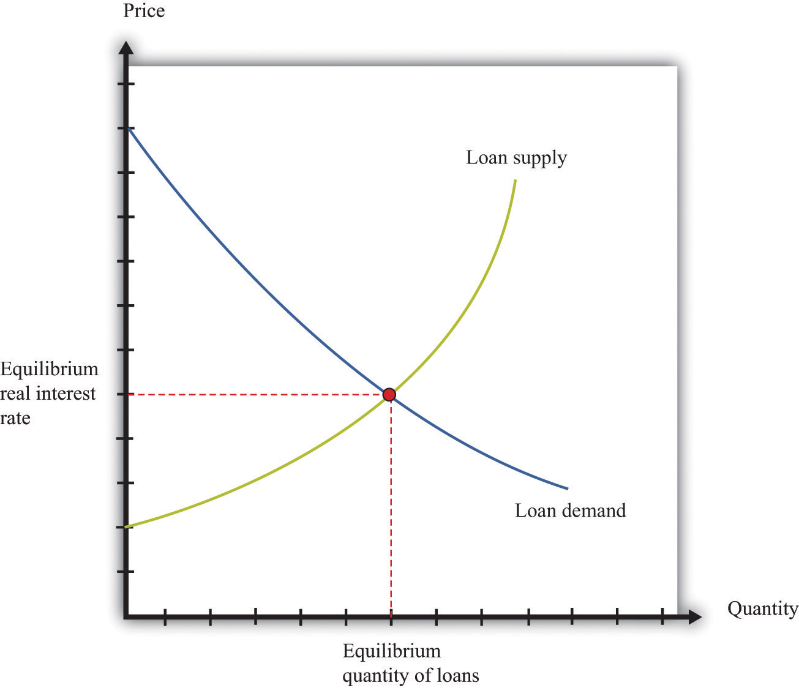When you borrow or lend, you normally do so in dollar terms. If you take out a loan, the loan is denominated in dollars, and your promised payments are denominated in dollars. These dollar flows must be corrected for inflation to calculate the repayment in real terms. A similar point holds if you are a lender: you need to calculate the interest you earn on saving by correcting for inflation.
The Fisher equation provides the link between nominal and real interest rates. To convert from nominal interest rates to real interest rates, we use the following formula:
real interest rate ≈ nominal interest rate − inflation rate.To find the real interest rate, we take the nominal interest rate and subtract the inflation rate. For example, if a loan has a 12 percent interest rate and the inflation rate is 8 percent, then the real return on that loan is 4 percent.
In calculating the real interest rate, we used the actual inflation rate. This is appropriate when you wish to understand the real interest rate actually paid under a loan contract. But at the time a loan agreement is made, the inflation rate that will occur in the future is not known with certainty. Instead, the borrower and lender use their expectations of future inflation to determine the interest rate on a loan. From that perspective, we use the following formula:
contracted nominal interest rate ≈ real interest rate + expected inflation rate.We use the term contracted nominal interest rate to make clear that this is the rate set at the time of a loan agreement, not the realized real interest rate.
Imagine two individuals write a loan contract to borrow P dollars at a nominal interest rate of i. This means that next year the amount to be repaid will be P × (1 + i). This is a standard loan contract with a nominal interest rate of i.
Now imagine that the individuals decided to write a loan contract to guarantee a constant real return (in terms of goods not dollars) denoted r. So the contract provides P this year in return for being repaid (enough dollars to buy) (1 + r) units of real gross domestic product (real GDP) next year. To repay this loan, the borrower gives the lender enough money to buy (1 + r) units of real GDP for each unit of real GDP that is lent. So if the inflation rate is π, then the price level has risen to P × (1 + π), so the repayment in dollars for a loan of P dollars would be P(1 + r) × (1 + π).
Here (1 + π) is one plus the inflation rate. The inflation rate πt+1 is defined—as usual—as the percentage change in the price level from period t to period t + 1.
πt+1 = (Pt+1 − Pt)/Pt.If a period is one year, then the price level next year is equal to the price this year multiplied by (1 + π):
Pt+1 = (1 + πt) × Pt.The Fisher equation says that these two contracts should be equivalent:
(1 + i) = (1 + r) × (1 + π).As an approximation, this equation implies
i ≈ r + π.To see this, multiply out the right-hand side and subtract 1 from each side to obtain
i = r + π + rπ.If r and π are small numbers, then rπ is a very small number and can safely be ignored. For example, if r = 0.02 and π = 0.03, then rπ = 0.0006, and our approximation is about 99 percent accurate.
The aggregate production function describes how total real gross domestic product (real GDP) in an economy depends on available inputs. Aggregate output (real GDP) depends on the following:
We group the inputs other than labor, physical, and human capital together, and call them technology.
The aggregate production function has several key properties. First, output increases when there are increases in physical capital, labor, and natural resources. In other words, the marginal products of these inputs are all positive.
Second, the increase in output from adding more inputs is lower when we have more of a factor. This is called diminishing marginal product. That is,
In addition, increases in output can also come from increases in human capital, knowledge, and social infrastructure. In contrast to capital and labor, we do not assume that there are diminishing returns to human capital and technology. One reason is that we do not have a natural or an obvious measure for human capital, knowledge, or social infrastructure, whereas we do for labor and capital (hours of work and hours of capital usage).
Figure 31.19 shows the relationship between output and capital, holding fixed the level of other inputs. This figure shows two properties of the aggregate production function. As capital input is increased, output increases as well. But the change in output obtained by increasing the capital stock is lower when the capital stock is higher: this is the diminishing marginal product of capital.
Figure 31.19

In many applications, we want to understand how the aggregate production function responds to variations in the technology or other inputs. This is illustrated in Figure 31.20. An increase in, say, technology means that for a given level of the capital stock, more output is produced: the production function shifts upward as technology increases. Further, as technology increases, the production function is steeper: the increase in technology increases the marginal product of capital.
Figure 31.20

We can write the production function in mathematical form. We use Y to represent real GDP, K to represent the physical capital stock, L to represent labor, H to represent human capital, and A to represent technology (including natural resources). If we want to speak about production completely generally, then we can write Y = F(K,L,H,A). Here F() means “some function of.”
A lot of the time, economists work with a production function that has a specific mathematical form, yet is still reasonably simple:
Y = A × Ka × (L × H)(1 − a),where a is just a number. This is called a Cobb-Douglas production function. It turns out that this production function does a remarkably good job of summarizing aggregate production in the economy. In fact, we also know that we can describe production in actual economies quite well if we suppose that a = 1/3.
The circular flow of income describes the flows of money among the five main sectors of an economy. As individuals and firms buy and sell goods and services, money flows among the different sectors of an economy. The circular flow of income describes these flows of dollars (pesos, euros, or whatever). From a simple version of the circular flow, we learn that—as a matter of accounting—
gross domestic product (GDP) = income = production = spending.This relationship lies at the heart of macroeconomic analysis.
There are two sides to every transaction. Corresponding to the flows of money in the circular flow, there are flows of goods and services among these sectors. For example, the wage income received by consumers is in return for labor services that flow from households to firms. The consumption spending of households is in return for the goods and services that flow from firms to households.
A complete version of the circular flow is presented in Figure 31.21. (Chapter 18 "The State of the Economy" contains a discussion of a simpler version of the circular flow with only two sectors: households and firms.)
Figure 31.21
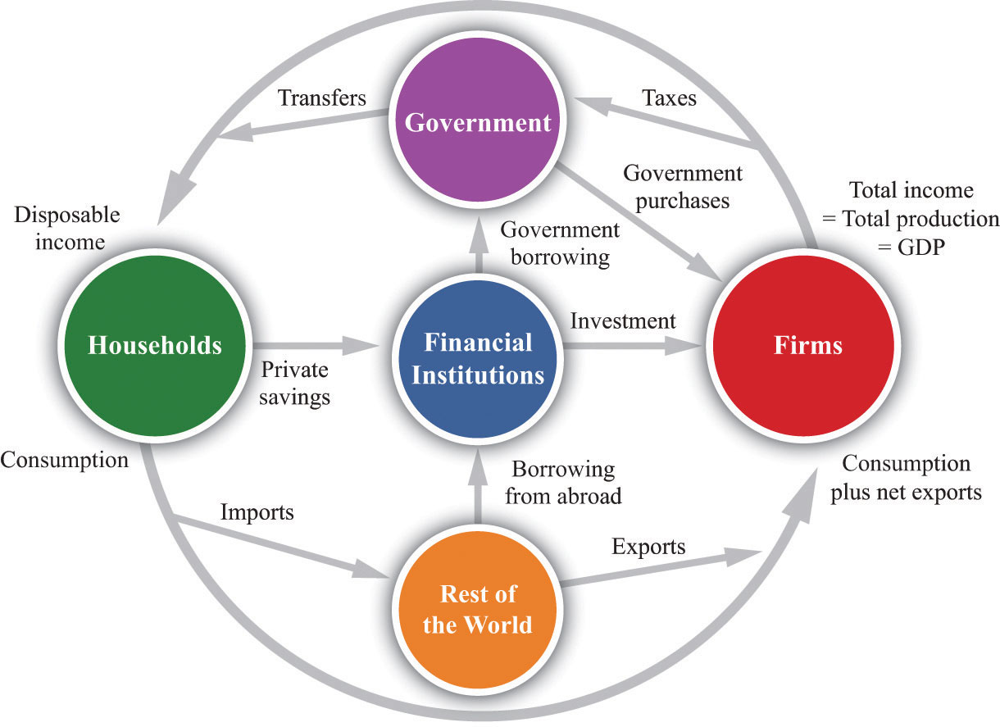The complete circular flow has five sectors: a household sector, a firm sector, a government sector, a foreign sector, and a financial sector. Different chapters of the book emphasize different pieces of the circular flow, and Figure 31.21 shows us how everything fits together. In the following subsections, we look at the flows into and from each sector in turn. In each case, the balance of the flows into and from each sector underlies a useful economic relationship.
Figure 31.21 includes the component of the circular flow associated with the flows into and from the firm sector of an economy. We know that the total flow of dollars from the firm sector measures the total value of production in an economy. The total flow of dollars into the firm sector equals total expenditures on GDP. We therefore know that
production = consumption + investment + government purchases + net exports.This equation is called the national income identity and is the most fundamental relationship in the national accounts.
By consumption we mean total consumption expenditures by households on final goods and services. Investment refers to the purchase of goods and services that, in one way or another, help to produce more output in the future. Government purchases include all purchases of goods and services by the government. Net exports, which equal exports minus imports, measure the expenditure flows associated with the rest of the world.
The household sector summarizes the behavior of private individuals in their roles as consumers/savers and suppliers of labor. The balance of flows into and from this sector is the basis of the household budget constraint. Households receive income from firms, in the form of wages and in the form of dividends resulting from their ownership of firms. The income that households have available to them after all taxes have been paid to the government and all transfers received is called disposable income. Households spend some of their disposable income and save the rest. In other words,
disposable income = consumption + household savings.This is the household budget constraint. In Figure 31.21, this equation corresponds to the fact that the flows into and from the household sector must balance.
The government sector summarizes the actions of all levels of government in an economy. Governments tax their citizens, pay transfers to them, and purchase goods from the firm sector of the economy. Governments also borrow from or lend to the financial sector. The amount that the government collects in taxes need not equal the amount that it pays out for government purchases and transfers. If the government spends more than it gathers in taxes, then it must borrow from the financial markets to make up the shortfall.
The circular flow figure shows two flows into the government sector and two flows out. Since the flows into and from the government sector must balance, we know that
government purchases + transfers = tax revenues + government borrowing.Government borrowing is sometimes referred to as the government budget deficit. This equation is the government budget constraint.
Some of the flows in the circular flow can go in either direction. When the government is running a deficit, there is a flow of dollars to the government sector from the financial markets. Alternatively, the government may run a surplus, meaning that its revenues from taxation are greater than its spending on purchases and transfers. In this case, the government is saving rather than borrowing, and there is a flow of dollars to the financial markets from the government sector.
The circular flow includes a country’s dealings with the rest of the world. These flows include exports, imports, and borrowing from other countries. Exports are goods and services produced in one country and purchased by households, firms, and governments of another country. Imports are goods and services purchased by households, firms, and governments in one country but produced in another country. Net exports are exports minus imports. When net exports are positive, a country is running a trade surplus: exports exceed imports. When net exports are negative, a country is running a trade deficit: imports exceed exports. The third flow between countries is borrowing and lending. Governments, individuals, and firms in one country may borrow from or lend to another country.
Net exports and borrowing are linked. If a country runs a trade deficit, it borrows from other countries to finance that deficit. If we look at the flows into and from the foreign sector, we see that
borrowing from other countries + exports = imports.Subtracting exports from both sides, we obtain
borrowing from other countries = imports − exports = trade deficit.Whenever our economy runs a trade deficit, we are borrowing from other countries. If our economy runs a trade surplus, then we are lending to other countries.
This analysis has omitted one detail. When we lend to other countries, we acquire their assets, so each year we get income from those assets. When we borrow from other countries, they acquire our assets, so we pay them income on those assets. Those income flows are added to the trade surplus/deficit to give the current account of the economy. It is the current account that must be matched by borrowing from or lending to other countries. A positive current account means that net exports plus net income flows from the rest of the world are positive. In this case, our economy is lending to the rest of the world and acquiring more assets.
The financial sector of an economy summarizes the behavior of banks and other financial institutions. The balance of flows into and from the financial sector tell us that investment is financed by national savings and borrowing from abroad. The financial sector is at the heart of the circular flow. The figure shows four flows into and from the financial sector.
The national savings of the economy is the savings carried out by the private and government sectors taken together. When the government is running a deficit, some of the savings of households and firms must be used to fund that deficit, so there is less left over to finance investment. National savings is then equal to private savings minus the government deficit—that is, private savings minus government borrowing:
national savings = private savings − government borrowing.If the government is running a surplus, then
national savings = private savings + government surplus.National savings is therefore the amount that an economy as a whole saves. It is equal to what is left over after we subtract consumption and government spending from GDP. To see this, notice that
private savings − government borrowing = income − taxes + transfers − consumption − (government purchases + transfers − taxes) = income − consumption − government purchases.This is the domestic money that is available for investment.
If we are borrowing from other countries, there is another source of funds for investment. The flows into and from the financial sector must balance, so
investment = national savings + borrowing from other countries.Conversely, if we are lending to other countries, then our national savings is divided between investment and lending to other countries:
national savings = investment + lending to other countries.Growth accounting is a tool that tells us how changes in real gross domestic product (real GDP) in an economy are due to changes in available capital, labor, human capital, and technology. Economists have shown that, under reasonably general circumstances, the change in output in an economy can be written as follows:
output growth rate = a × capital stock growth rate + [(1 − a) × labor hours growth rate]+ [(1 − a) × human capital growth rate] + technology growth rate.In this equation, a is just a number. For example, if a = 1/3, the growth in output is as follows:
output growth rate = (1/3 × capital stock growth rate) + (2/3 × labor hours growth rate)+ (2/3 × human capital growth rate) + technology growth rate.Growth rates can be positive or negative, so we can use this equation to analyze decreases in GDP as well as increases. This expression for the growth rate of output, by the way, is obtained by applying the rules of growth rates (discussed in Section 31.21 "Growth Rates") to the Cobb-Douglas aggregate production function (discussed in Section 31.26 "The Aggregate Production Function").
What can we measure in this expression? We can measure the growth in output, the growth in the capital stock, and the growth in labor hours. Human capital is more difficult to measure, but we can use information on schooling, literacy rates, and so forth. We cannot, however, measure the growth rate of technology. So we use the growth accounting equation to infer the growth in technology from the things we can measure. Rearranging the growth accounting equation,
technology growth rate = output growth rate − (a × capital stock growth rate)− [(1 − a) × labor hours growth rate] − [(1 − a) × human capital growth rate].So if we know the number a, we are done—we can use measures of the growth in output, labor, capital stock, and human capital to solve for the technology growth rate. In fact, we do have a way of measuring a. The technical details are not important here, but a good measure of (1 − a) is simply the total payments to labor in the economy (that is, the total of wages and other compensation) as a fraction of overall GDP. For most economies, a is in the range of about 1/3 to 1/2.
The analysis in Chapter 21 "Global Prosperity and Global Poverty" is (implicitly) based on a theory of economic growth known as the Solow growth model. Here we present two formal versions of the mathematics of the model. The first takes as its focus the capital accumulation equation and explains how the capital stock evolves in the economy. This version ignores the role of human capital and ignores the long-run growth path of the economy. The second follows the exposition of the chapter and is based around the derivation of the balanced growth path. They are, however, simply two different ways of approaching the same problem.
There are three components of this presentation of the model: technology, capital accumulation, and saving. The first component of the Solow growth model is the specification of technology and comes from the aggregate production function. We express output per worker (y) as a function of capital per worker (k) and technology (A). A mathematical expression of this relationship is
y = Af(k),where f(k) means that output per worker depends on capital per worker. As in our presentation of production functions, output increases with technology. We assume that f() has the properties that more capital leads to more output per capita at a diminishing rate. As an example, suppose
y = Ak1/3.In this case the marginal product of capital is positive but diminishing.
The second component is capital accumulation. If we let kt be the amount of capital per capita at the start of year t, then we know that
kt+1 = kt(1 − δ) + it.This expression shows how the capital stock changes over time. Here δ is the rate of physical depreciation so that between year t and year t +1, δkt units of capital are lost from depreciation. But during year t, there is investment (it) that yields new capital in the following year.
The final component of the Solow growth model is saving. In a closed economy, saving is the same as investment. Thus we link it in the accumulation equation to saving. Assume that saving per capita (st) is given by
st = s × yt.Here s is a constant between zero and one, so only a fraction of total output is saved.
Using the fact that savings equals investment, along with the per capita production function, we can relate investment to the level of capital:
it = sAf(kt).We can then write the equation for the evolution of the capital stock as follows:
kt+1 = kt(1 − δ) + sAf(kt).Once we have specified the function f(), we can follow the evolution of the capital stock over time. Generally, the path of the capital stock over time has two important properties:
To be more specific, the steady state level of capital solves the following equation:
k* = k*(1 − δ) + sAf(k*).At the steady state, the amount of capital lost by depreciation is exactly offset by saving. This means that at the steady state, net investment is exactly zero. The property of stability means that if the current capital stock is below k*, the economy will accumulate capital so that kt+1 > kt. And if the current capital stock is above k*, the economy will decumulate capital so that kt+1 < kt.
If two countries share the same technology (A) and the same production function [f(k)], then over time these two countries will eventually have the same stock of capital per worker. If there are differences in the technology or the production function, then there is no reason for the two countries to converge to the same level of capital stock per worker.
In this presentation, we explain the balanced-growth path of the economy and prove some of the claims made in the text. The model takes as given (exogenous) the investment rate; the depreciation rate; and the growth rates of the workforce, human capital, and technology. The endogenous variables are output and physical capital stock.
The notation for the presentation is given in Table 31.11 "Notation in the Solow Growth Model": We use the notation gx to represent the growth rate of a variable x; that is,
There are two key ingredients to the model: the aggregate production function and the equation for capital accumulation.
Table 31.11 Notation in the Solow Growth Model
| Variable | Symbol |
|---|---|
| Real gross domestic product | Y |
| Capital stock | K |
| Human capital | H |
| Workforce | L |
| Technology | A |
| Investment rate | i |
| Depreciation rate | δ |
The production function we use is the Cobb-Douglas production function:
Equation 31.1
Y = Ka(HL)1−aA.If we apply the rules of growth rates to Equation 31.1, we get the following expression:
Equation 31.2
gY = agK + (1 − a)(gL + gH) + gA.The condition for balanced growth is that gY = gK. When we impose this condition on our equation for the growth rate of output (Equation 31.2), we get
where the superscript “BG” indicates that we are considering the values of variables when the economy is on a balanced growth path. This equation simplifies to
Equation 31.3
The growth in output on a balanced-growth path depends on the growth rates of the workforce, human capital, and technology.
Using this, we can rewrite Equation 31.2 as follows:
Equation 31.4
The actual growth rate in output is an average of the balanced-growth rate of output and the growth rate of the capital stock.
The second piece of our model is the capital accumulation equation. The growth rate of the capital stock is given by
Equation 31.5
Divide the numerator and denominator of the first term by Y, remembering that i = I/Y.
Equation 31.6
The growth rate of the capital stock depends positively on the investment rate and negatively on the depreciation rate. It also depends negatively on the current capital-output ratio.
Now rearrange Equation 31.6 to give the ratio of capital to gross domestic product (GDP), given the depreciation rate, the investment rate, and the growth rate of the capital stock:
When the economy is on a balanced growth path, gK = , so
We can also substitute in our balanced-growth expression for (Equation 31.3) to get an expression for the balanced-growth capital output ratio in terms of exogenous variables.
The proof that economies will converge to the balanced-growth ratio of capital to GDP is relatively straightforward. We want to show that if K/Y < then capital grows faster than output. If capital is growing faster than output, gK − gY > 0. First, go back to Equation 31.4:
Subtract both sides from the growth rate of capital:
Now compare the general expression for ratio of capital to GDP with its balanced growth value:
and
If K/Y < then it must be the case that gK > , which implies (from the previous equation) that gK > gY.
If we want to examine the growth in output per worker rather than total output, we take the per-worker production function (Equation 31.2) and apply the rules of growth rates to that equation.
(1 − a)gY = a[gK − gY] + (1 − a)[gL + gH] + gA = a[gK − gY] + (1 − a)[gL + gH] + gA.We then we divide by (1 − a) to get
and subtract gL from each side to obtain
Finally, we note that gY − gL = gY/L:
With balanced growth, the first term is equal to zero, so
In this analysis, we made the assumption from the Solow model that the investment rate is constant. The essential arguments that we have made still apply if the investment rate is higher when the marginal product of capital is higher. The argument for convergence becomes stronger because a low value of K/Y implies a higher marginal product of capital and thus a higher investment rate. This increases the growth rate of capital and causes an economy to converge more quickly to its balanced-growth path.
Take the production function
Y = Ka(HL)1−aA.Now assume A is constant and so
The aggregate expenditure model relates the components of spending (consumption, investment, government purchases, and net exports) to the level of economic activity. In the short run, taking the price level as fixed, the level of spending predicted by the aggregate expenditure model determines the level of economic activity in an economy.
An insight from the circular flow is that real gross domestic product (real GDP) measures three things: the production of firms, the income earned by households, and total spending on firms’ output. The aggregate expenditure model focuses on the relationships between production (GDP) and planned spending:
GDP = planned spending = consumption + investment + government purchases + net exports.Planned spending depends on the level of income/production in an economy, for the following reasons:
The negative net export link is not large enough to overcome the other positive links, so we conclude that when income increases, so also does planned expenditure. We illustrate this in Figure 31.22 "Planned Spending in the Aggregate Expenditure Model" where we suppose for simplicity that there is a linear relationship between spending and GDP. The equation of the line is as follows:
spending = autonomous spending + marginal propensity to spend × real GDP.Figure 31.22 Planned Spending in the Aggregate Expenditure Model
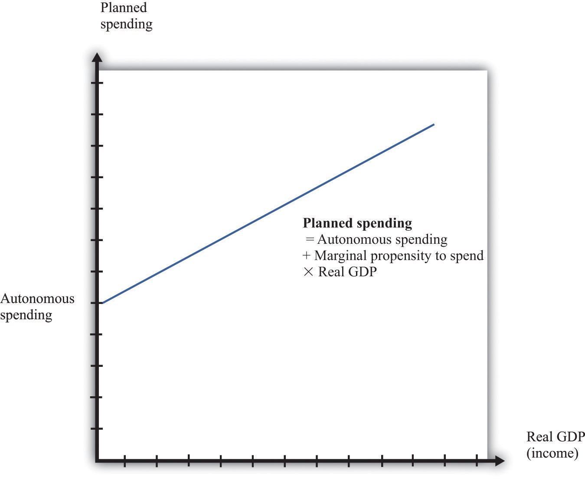The intercept in Figure 31.22 "Planned Spending in the Aggregate Expenditure Model" is called autonomous spending. It represents the amount of spending that there would be in an economy if income (GDP) were zero. We expect that this will be positive for two reasons: (1) if a household finds its income is zero, it will still want to consume something, so it will either draw on its existing wealth (past savings) or borrow against future income; and (2) the government would spend money even if GDP were zero.
The slope of the line in Figure 31.22 "Planned Spending in the Aggregate Expenditure Model" is given by the marginal propensity to spend. For the reasons that we have just explained, we expect that this is positive: increases in income lead to increased spending. However, we expect the marginal propensity to spend to be less than one.
The aggregate expenditure model is based on the two equations we have just discussed. We can solve the model either graphically or using algebra. The graphical approach relies on Figure 31.23. On the horizontal axis is the level of real GDP. On the vertical axis is the level of spending as well as the level of GDP. There are two lines shown. The first is the 45° line, which equates real GDP on the horizontal axis with real GDP on the vertical axis. The second line is the planned spending line. The intersection of the spending line with the 45° line gives the equilibrium level of output.
Figure 31.23
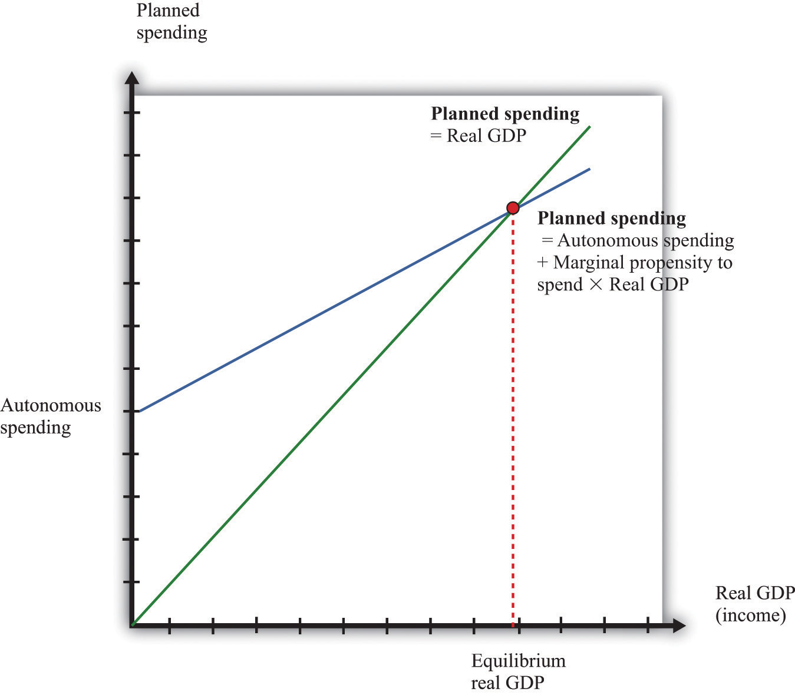We can also solve the model algebraically. Let us use Y to denote the level of real GDP and E to denote planned expenditure. We represent the marginal propensity to spend by β. The two equations of the model are as follows:
Y = Eand
E = E0 + β × Y.Here, E0 is autonomous expenditure. We can solve the two equations to find the values of E and Y that are consistent with both equations. Substituting for E in the first equation, we find that
The equilibrium level of output is the product of two terms. The first term—(1/(1 − β))—is called the multiplier. If, as seems reasonable, β lies between zero and one, the multiplier is greater than one. The second term is the autonomous level of spending.
Here is an example. Suppose that
C = 100 + 0.6Y, I = 400, G = 300,and
NX = 200 − 0.1Y,where C is consumption, I is investment, G is government purchases, and NX is net exports. First group the components of spending as follows:
C + I + G + NX = (100 + 400 + 300 + 200) + (0.6Y − 0.1Y)Adding together the first group of terms, we find autonomous spending:
E0 = 100 + 400 + 300 + 200 = 1,000.Adding the coefficients on the income terms, we find the marginal propensity to spend:
β = 0.6 − 0.1 = 0.5.Using β = 0.5, we calculate the multiplier:
We then calculate real GDP:
Y = 2 × 1,000 = 2,000.The price adjustment equation summarizes, at the level of an entire economy, all the decisions about prices that are made by managers throughout the economy. The price adjustment equation is as follows:
inflation rate = autonomous inflation − inflation sensitivity × output gap.The equation tells us that there are two reasons for rising prices. The first is because the output gap is negative. The output gap is the difference between potential output and actual output:
output gap = potential real gross domestic product (real GDP) − actual real GDP.A positive gap means that the economy is in recession—below potential output. If the economy is in a boom, then the output gap is negative.
The second reason for rising prices is that autonomous inflation is positive. Autonomous inflation refers to the inflation rate that prevails in an economy when an economy is at potential output (so the output gap is zero). Looking at the second term of the price adjustment equation, we see that when real GDP is greater than potential output, the output gap is negative, so there is upward pressure on prices in the economy. The inflation rate will exceed autonomous inflation. By contrast, when real GDP is less than potential output, the output gap is negative, so there is downward pressure on prices. The inflation rate will be below the autonomous inflation rate. The “inflation sensitivity” tells us how responsive the inflation rate is to the output gap.
The output gap matters because, as GDP increases relative to potential output, labor and other inputs become scarcer. Firms are likely to see rising costs and increase their prices as a consequence. Even leaving this aside—that is, even when an economy is at potential output—firms are likely to increase their prices somewhat. For example, firms may anticipate that their suppliers or their competitors are likely to increase prices in the future. A natural response is to increase prices, so autonomous inflation is positive. Figure 31.24 "Price Adjustment" shows the price adjustment equation graphically.
Figure 31.24 Price Adjustment
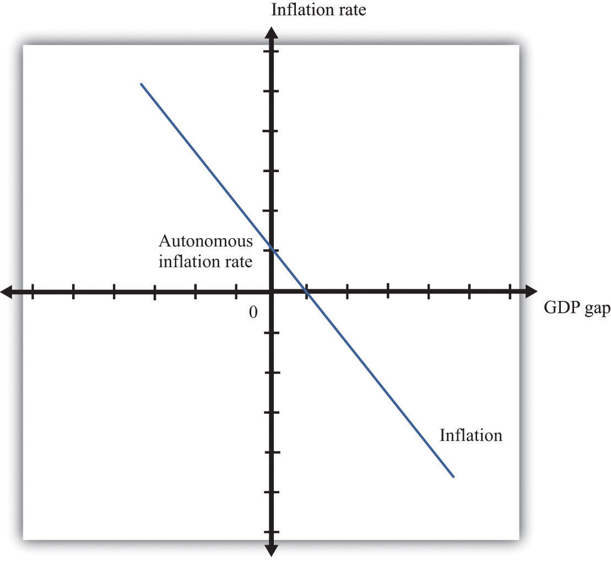The consumption function is a relationship between current disposable income and current consumption. It is intended as a simple description of household behavior that captures the idea of consumption smoothing. We typically suppose the consumption function is upward-sloping but has a slope less than one. So as disposable income increases, consumption also increases but not as much. More specifically, we frequently assume that consumption is related to disposable income through the following relationship:
consumption = autonomous consumption + marginal propensity to consume × disposable income.A consumption function of this form implies that individuals divide additional income between consumption and saving.
Figure 31.25 "The Consumption Function" shows this relationship.
Figure 31.25 The Consumption Function

In symbols, we write the consumption function as a relationship between consumption (C) and disposable income (Yd):
C = a + bYdwhere a and b are constants. Here a represents autonomous consumption and b is the marginal propensity to consume. We assume three things about a and b:
The first assumption means that even if disposable income is zero (Yd = 0), consumption will still be positive. The second assumption means that the marginal propensity to consume is positive. By the third assumption, the marginal propensity to consume is less that one. With 0 < b < 1, part of an extra dollar of disposable income is spent.
What happens to the remainder of the increase in disposable income? Since consumption plus saving is equal to disposable income, the increase in disposable income not consumed is saved. More generally, this link between consumption and saving (S) means that our model of consumption implies a model of saving as well.
Using
Yd = C + Sand
C = a + bYdwe can solve for S:
S = Yd − C = −a + (1 − b)Yd.So −a is the level of autonomous saving and (1 − b) is the marginal propensity to save.
We can also graph the savings function. The savings function has a negative intercept because when income is zero, the household will dissave. The savings function has a positive slope because the marginal propensity to save is positive.
Economists also often look at the average propensity to consume (APC), which measures how much income goes to consumption on average. It is calculated as follows:
APC = C/Yd.When disposable income increases, consumption also increases but by a smaller amount. This means that when disposable income increases, people consume a smaller fraction of their income: the average propensity to consume decreases. Using our notation, we are saying that using C = a + bYd, so we can write
APC = a/Yd + b.An increase in disposable income reduces the first term, which also reduces the APC.
Like households, governments are subject to budget constraints. These can be viewed in two ways, either within a single year or across many years.
In any given year, money flows into the government sector, primarily from the taxes that it imposes on individuals and corporations. We call these government revenues. Money flows out in the form of outlays: government purchases of goods and services and government transfers. The circular flow of income tells us that any difference between government purchases and transfers and government revenues represents a government deficit.
Often, we find it useful to group taxes and transfers together as “net taxes” and separate out government purchases, as in the last line of our definition.
When outflows are less than inflows, then we say a government is running a surplus. In other words, a negative government deficit is the same as a positive government surplus, and a negative government surplus is the same as a positive government deficit.
government surplus = −government deficit.When a government runs a deficit, it must borrow from the financial markets. When a government runs a surplus, these funds flow into the financial markets and are available for firms to borrow. A government surplus is sometimes called government saving.
Tax and spending decisions at different dates are linked. Although governments can borrow or lend in a given year, a government’s total spending over time must be matched with revenues. When a government runs a deficit, it typically borrows to finance it. It borrows by issuing more government debt (government bonds).
To express the intertemporal budget constraint, we introduce a measure of the deficit called the primary deficit. The primary deficit is the difference between government outlays, excluding interest payments on the debt, and government revenues. The primary surplus is minus the primary deficit and is the difference between government revenues and government outlays, excluding interest payments on the debt.
The intertemporal budget constraint says that if a government has some existing debt, it must run surpluses in the future so that it can ultimately pay off that debt. Specifically, it is the requirement that
current debt outstanding = discounted present value of future primary surpluses.This condition means that the debt outstanding today must be offset by primary budget surpluses in the future. Because we are adding together flows in the future, we have to use the tool of discounted present value. If, for example, the current stock of debt is zero, then the intertemporal budget constraint says that the discounted present value of future primary surpluses must equal zero.
The stock of debt is linked directly to the government budget deficit. As we noted earlier, when a government runs a budget deficit, it finances the deficit by issuing new debt. The deficit is a flow that is matched by a change in the stock of government debt:
change in government debt (in given year) = deficit (in given year).The stock of debt in a given year is equal to the deficit over the previous year plus the stock of debt from the start of the previous year. If there is a government surplus, then the change in the debt is a negative number, so the debt decreases. The total government debt is simply the accumulation of all the previous years’ deficits.
When a government borrows, it must pay interest on its debt. These interest payments are counted as part of the deficit (they are included in transfers). If a government wants to balance the budget, then government spending must actually be less than the amount government receives in the form of net taxes (excluding interest).
This presentation of the tool neglects one detail. There is another way in which a government can fund its deficit. As well as issuing government debt, it can print money. More precisely, then, every year,
change in government debt = deficit − change in money supply.Written this way, the equation tells us that the part of the deficit that is not financed by printing money results in an increase in the government debt.
We often denote government purchases of goods and services by G and net tax revenues (tax revenues minus transfers) by T. The equation for tax revenues is as follows:
T = τ × Y,where τ is the tax rate on income and Y is real gross domestic product (real GDP). The deficit is given as follows:
government deficit = G − T = G − τ × Y.From this equation, the deficit depends on the following:
The life-cycle model of consumption looks at the lifetime consumption and saving decisions of an individual. The choices made about consumption and saving depend on income earned over an individual’s entire lifetime. The model has two key components: the lifetime budget constraint and individual choice given that constraint.
Consider the consumption/saving decision of an individual who expects to work for a known number of years and be retired for a known number of years thereafter. Suppose his disposable income is the same in every working year, and he will also receive an annual retirement income—again the same in every year. According to the life-cycle model of consumption, the individual first calculates the discounted present value (DPV) of lifetime income:
DPV of lifetime income = DPV of income from working + DPV of retirement income.(If the real interest rate is zero, then the DPV calculation simply involves adding income flows across years.)
We assume the individual wants to consume at the same level in each period of life. This is called consumption smoothing. In the special case of a zero real interest rate, we have the following:
Suppose an individual expects to work for a total of N years and to be retired for R years. Suppose his disposable income is equal to Yd in every year, and he receives annual retirement income of Z. Then lifetime income, assuming a zero real interest rate, is given as follows:
lifetime income = NYd + RZ.If we suppose that he wants to have perfectly smooth consumption, equal to C in each year, then his total lifetime consumption will be
C × (N + R).The lifetime budget constraint says that lifetime consumption equals lifetime income:
C × (N + R) = NYd + RZ.To obtain his consumption, we simply divide this equation by the number of years he is going to live (N + R):
Provided that income during working years is greater than income in retirement years, the individual will save during his working years and dissave during retirement.
If the real interest rate is not equal to zero, then the basic idea is the same—an individual smooths consumption based on a lifetime budget constraint—but the calculations are more complicated. Specifically, the lifetime budget constraint must be written in terms of the discounted present values of income and consumption.
The aggregate supply and aggregate demand (ASAD) model is presented here. To understand the ASAD model, we need to explain both aggregate demand and aggregate supply and then the determination of prices and output.
The aggregate demand curve tells us the level of expenditure in an economy for a given price level. It has a negative slope: the demand for real gross domestic product (real GDP) decreases when the price level increases. The downward sloping aggregate demand curve does not follow from the microeconomic “law of demand.” As the price level increases, all prices in an economy increase together. The substitution of expensive goods for cheap goods, which underlies the law of demand, does not occur in the aggregate economy.
Instead, the downward sloping demand curve comes from other forces. First, as prices rise, the real value of nominal wealth falls, and this leads to a fall in household spending. Second, as prices rise today relative to future prices, households are induced to postpone consumption. Finally, a higher price level can lead to a higher interest rate through the response of monetary policy. All these factors together imply that higher prices lead to lower overall demand for real GDP.
Aggregate supply is equal to potential output at all prices. Potential output is determined by the available technology, physical capital, and labor force and is unaffected by the price level. Thus the aggregate supply curve is vertical. In contrast to a firm’s supply curve, as the price level increases, all prices in an economy increase. This includes the prices of inputs, such as labor, into the production process. Since no relative prices change when the price level increases, firms are not induced to change the quantity they supply. Thus aggregate supply is vertical.
The determination of prices and output depends on the horizon: the long run or the short run. In the long run, real GDP equals potential GDP, and real GDP also equals aggregate expenditure. This means that, in the long run, the price level must be at the point where aggregate demand and aggregate supply meet. This is shown in Figure 31.26 "Aggregate Supply and Aggregate Demand in the Long Run".
Figure 31.26 Aggregate Supply and Aggregate Demand in the Long Run
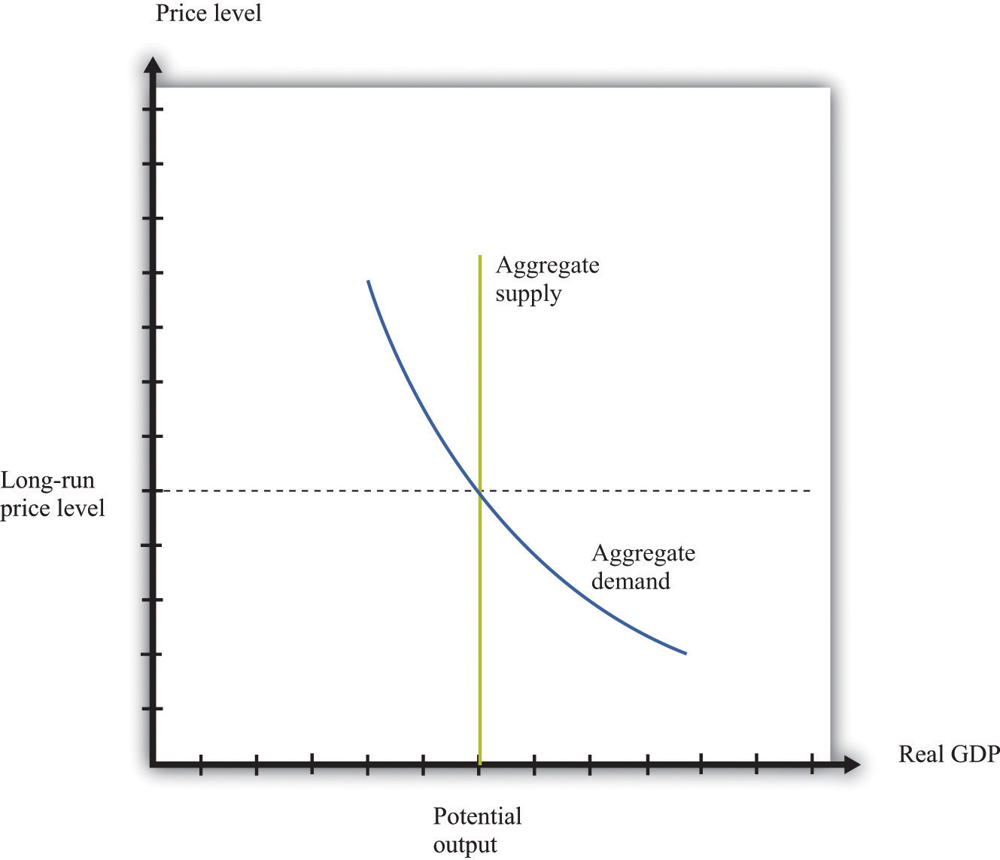In the short run, output is determined by aggregate demand at the existing price level. Prices need not be at their long-run equilibrium levels. If they are not, then output will not equal potential output. This is shown in Figure 31.27 "Aggregate Supply and Aggregate Demand in the Short Run".
Figure 31.27 Aggregate Supply and Aggregate Demand in the Short Run
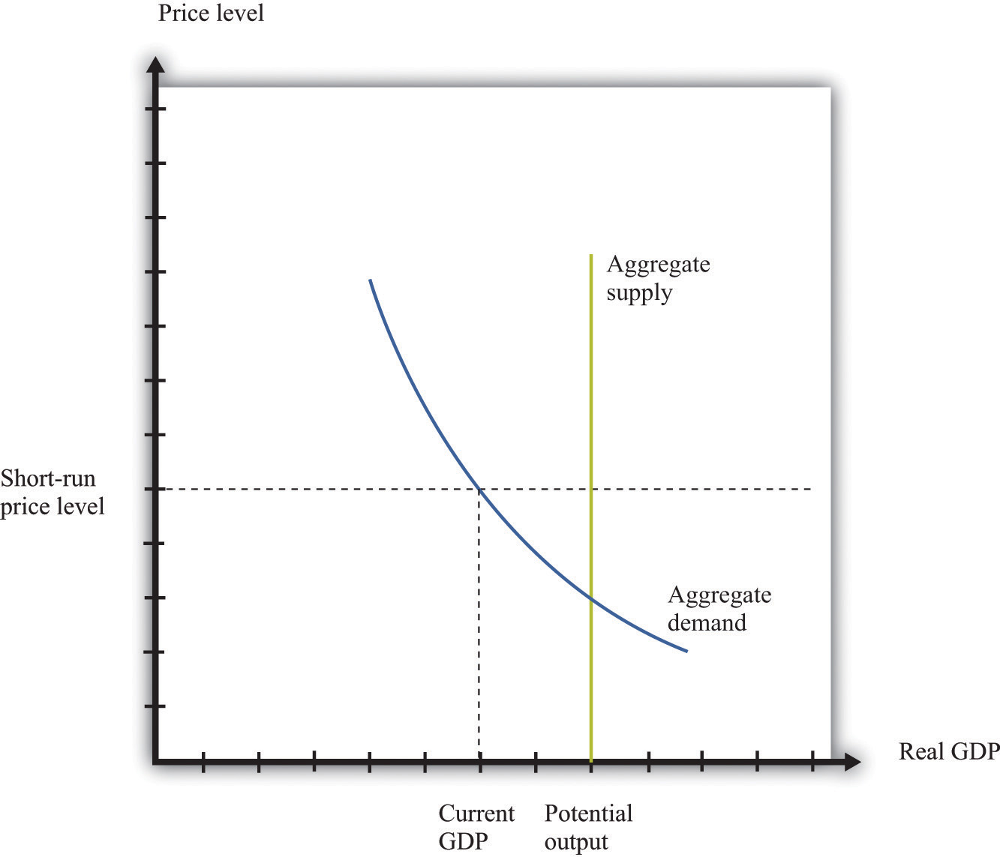The short-run price level is indicated on the vertical axis. The level of output is determined by aggregate demand at that price level. As prices are greater than the long-run equilibrium level of prices, output is below potential output. The price level adjusts over time to its long-run level, according to the price-adjustment equation.
We do not explicitly use this tool in our chapter presentations. However, the tool can be used to support the discussions in the following chapters.
The IS-LM model provides another way of looking at the determination of the level of short-run real gross domestic product (real GDP) in the economy. Like the aggregate expenditure model, it takes the price level as fixed. But whereas that model takes the interest rate as exogenous—specifically, a change in the interest rate results in a change in autonomous spending—the IS-LM model treats the interest rate as an endogenous variable.
The basis of the IS-LM model is an analysis of the money market and an analysis of the goods market, which together determine the equilibrium levels of interest rates and output in the economy, given prices. The model finds combinations of interest rates and output (GDP) such that the money market is in equilibrium. This creates the LM curve. The model also finds combinations of interest rates and output such that the goods market is in equilibrium. This creates the IS curve. The equilibrium is the interest rate and output combination that is on both the IS and the LM curves.
The LM curve represents the combinations of the interest rate and income such that money supply and money demand are equal. The demand for money comes from households, firms, and governments that use money as a means of exchange and a store of value. The law of demand holds: as the interest rate increases, the quantity of money demanded decreases because the interest rate represents an opportunity cost of holding money. When interest rates are higher, in other words, money is less effective as a store of value.
Money demand increases when output rises because money also serves as a medium of exchange. When output is larger, people have more income and so want to hold more money for their transactions.
The supply of money is chosen by the monetary authority and is independent of the interest rate. Thus it is drawn as a vertical line. The equilibrium in the money market is shown in Figure 31.28 "Money Market Equilibrium". When the money supply is chosen by the monetary authority, the interest rate is the price that brings the market into equilibrium. Sometimes, in some countries, central banks target the money supply. Alternatively, central banks may choose to target the interest rate. (This was the case we considered in Chapter 25 "Understanding the Fed".) Figure 31.28 "Money Market Equilibrium" applies in either case: if the monetary authority targets the interest rate, then the money market tells us what the level of the money supply must be.
Figure 31.28 Money Market Equilibrium
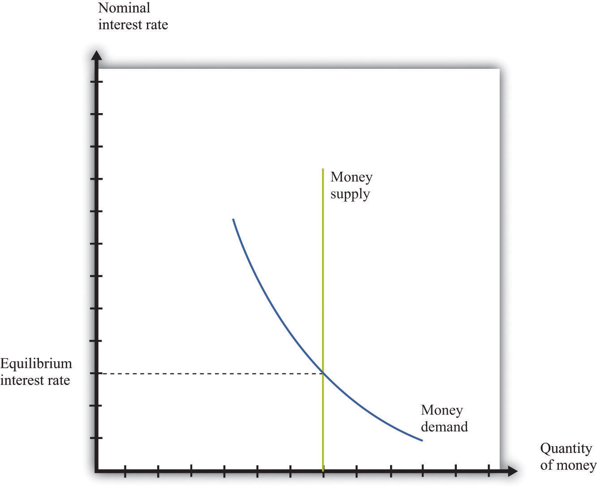To trace out the LM curve, we look at what happens to the interest rate when the level of output in the economy changes and the supply of money is held fixed. Figure 31.29 "A Change in Income" shows the money market equilibrium at two different levels of real GDP. At the higher level of income, money demand is shifted to the right; the interest rate increases to ensure that money demand equals money supply. Thus the LM curve is upward sloping: higher real GDP is associated with higher interest rates. At each point along the LM curve, money supply equals money demand.
We have not yet been specific about whether we are talking about nominal interest rates or real interest rates. In fact, it is the nominal interest rate that represents the opportunity cost of holding money. When we draw the LM curve, however, we put the real interest rate on the axis, as shown in Figure 31.30 "The LM Curve". The simplest way to think about this is to suppose that we are considering an economy where the inflation rate is zero. In this case, by the Fisher equation, the nominal and real interest rates are the same. In a more complete analysis, we can incorporate inflation by noting that changes in the inflation rate will shift the LM curve. Changes in the money supply also shift the LM curve.
Figure 31.29 A Change in Income
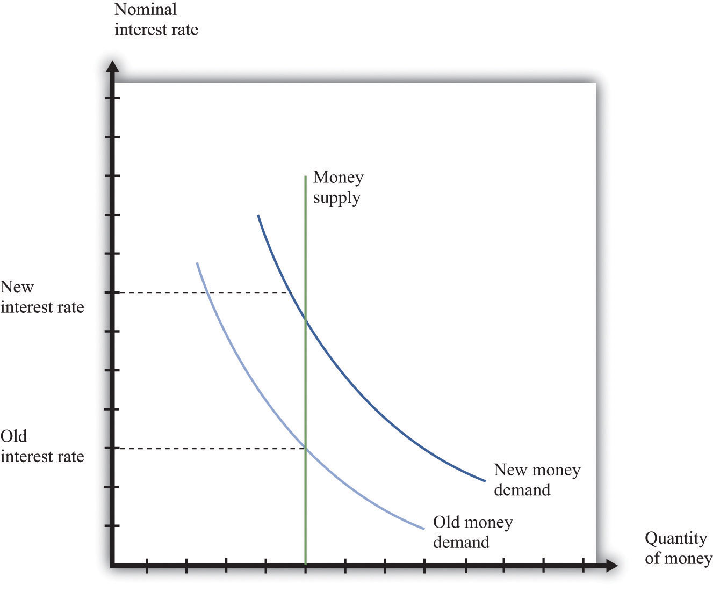Figure 31.30 The LM Curve

The IS curve relates the level of real GDP and the real interest rate. It incorporates both the dependence of spending on the real interest rate and the fact that, in the short run, real GDP equals spending. The IS curve is shown in Figure 31.29 "A Change in Income". We label the horizontal axis “real GDP” since, in the short run, real GDP is determined by aggregate spending. The IS curve is downward sloping: as the real interest rate increases, the level of spending decreases.
Figure 31.31 The IS Curve
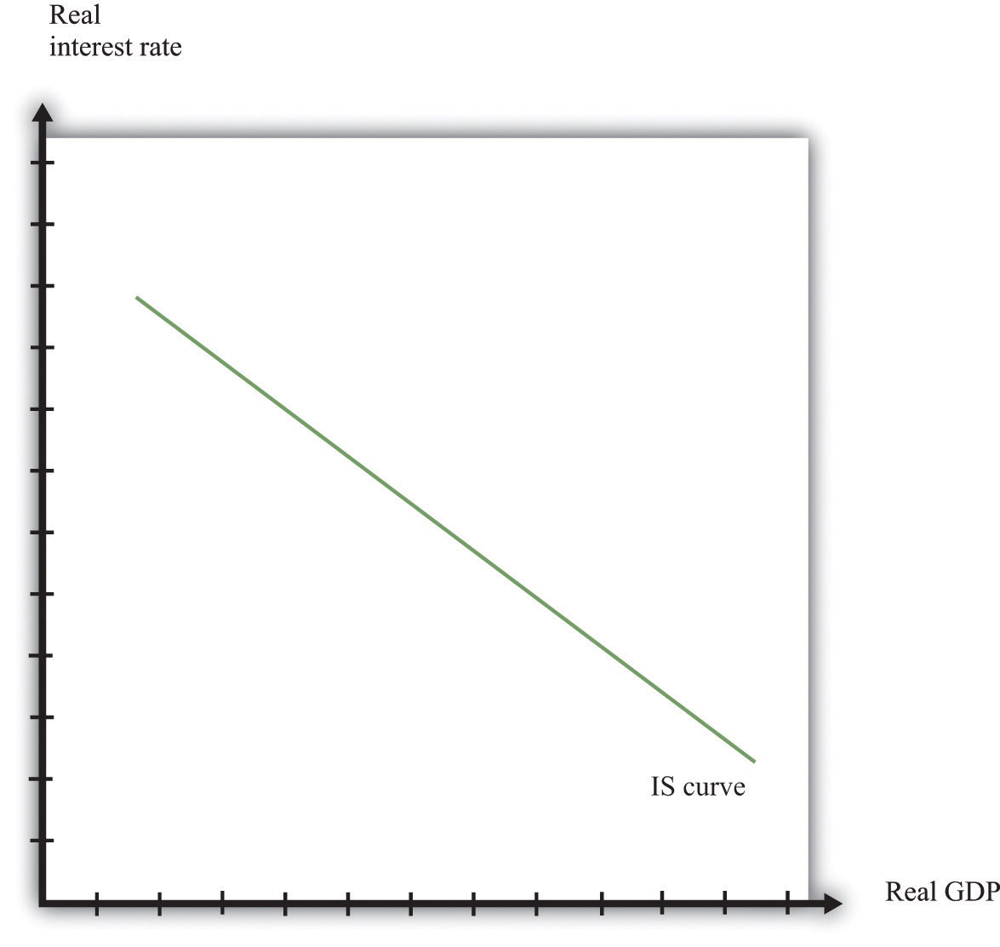In fact, we derived the IS curve in Chapter 25 "Understanding the Fed". The dependence of spending on real interest rates comes partly from investment. As the real interest rate increases, spending by firms on new capital and spending by households on new housing decreases. Consumption also depends on the real interest rate: spending by households on durable goods decreases as the real interest rate increases.
The connection between spending and real GDP comes from the aggregate expenditure model. Given a particular level of the interest rate, the aggregate expenditure model determines the level of real GDP. Now suppose the interest rate increases. This reduces those components of spending that depend on the interest rate. In the aggregate expenditure framework, this is a reduction in autonomous spending. The equilibrium level of output decreases. Thus the IS curve slopes downwards: higher interest rates are associated with lower real GDP.
Combining the discussion of the LM and the IS curves will generate equilibrium levels of interest rates and output. Note that both relationships are combinations of interest rates and output. Solving these two equations jointly determines the equilibrium. This is shown graphically in Figure 31.32. This just combines the LM curve from Figure 31.30 "The LM Curve" and the IS curve from Figure 31.31 "The IS Curve". The crossing of these two curves is the combination of the interest rate and real GDP, denoted (r*,Y*), such that both the money market and the goods market are in equilibrium.
Figure 31.32
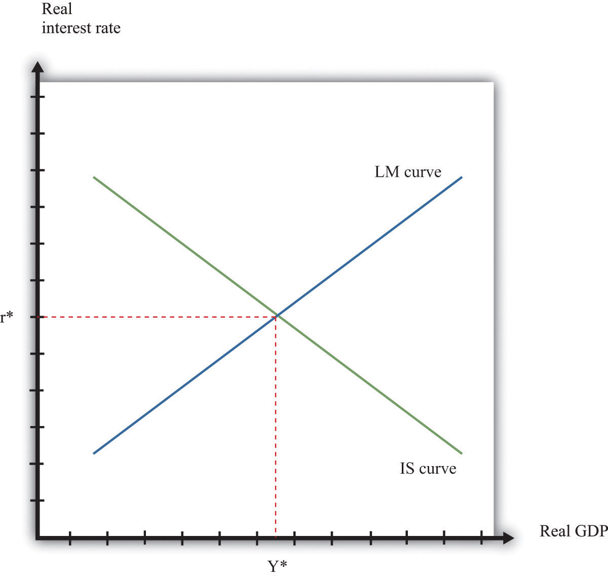Equilibrium in the IS-LM Model.
Comparative statics results for this model illustrate how changes in exogenous factors influence the equilibrium levels of interest rates and output. For this model, there are two key exogenous factors: the level of autonomous spending (excluding any spending affected by interest rates) and the real money supply. We can study how changes in these factors influence the equilibrium levels of output and interest rates both graphically and algebraically.
Variations in the level of autonomous spending will lead to a shift in the IS curve, as shown in Figure 31.33 "A Shift in the IS Curve". If autonomous spending increases, then the IS curve shifts out. The output level of the economy will increase. Interest rates rise as we move along the LM curve, ensuring money market equilibrium. One source of variations in autonomous spending is fiscal policy. Autonomous spending includes government spending (G). Thus an increase in G leads to an increase in output and interest rates as shown in Figure 31.33 "A Shift in the IS Curve".
Figure 31.33 A Shift in the IS Curve
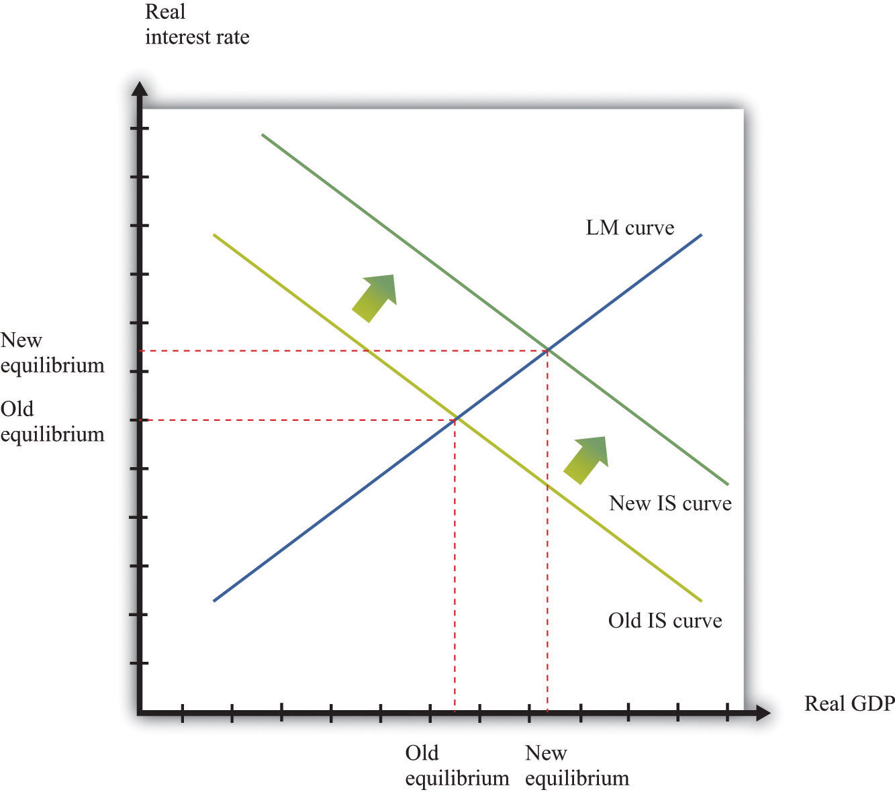Variations in the real money supply shift the LM curve, as shown in Figure 31.34 "A Shift in the LM Curve". If the money supply decreases, then the LM curve shifts in. This leads to a higher real interest rate and lower output as the LM curve shifts along the fixed IS curve.
Figure 31.34 A Shift in the LM Curve
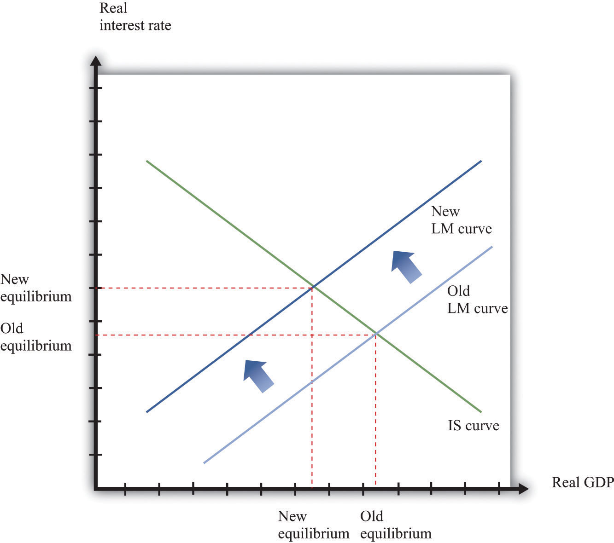We can represent the LM and IS curves algebraically.
Let L(Y,r) represent real money demand at a level of real GDP of Y and a real interest rate of r. (When we say “real” money demand, we mean that, as usual, we have deflated by the price level.) For simplicity, suppose that the inflation rate is zero, so the real interest rate is the opportunity cost of holding money.If we wanted to include inflation in our analysis, we could write the real demand for money as L(Y, r + π), where π is the inflation rate. Assume that real money demand takes a particular form:
L(Y,r) = L0 + L1Y – L2r.In this equation, L0, L1, and L2 are all positive constants. Real money demand is increasing in income and decreasing in the interest rate. Letting M/P be the real stock of money in the economy, then money market equilibrium requires
M/P = L0 + L1Y – L2r.Given a level of real GDP and the real stock of money, this equation can be used to solve for the interest rate such that money supply and money demand are equal. This is given by
r = (1/L2) [L0 + L1Y – M/P].From this equation we learn that an increase in the real stock of money lowers the interest rate, given the level of real GDP. Further, an increase in the level of real GDP increases the interest rate, given the stock of money. This is another way of saying that the LM curve is upward sloping.
Recall the two equations from the aggregate expenditure model:
Y = Eand
E = E0(r) + βY.Here we have shown explicitly that the level of autonomous spending depends on the real interest rate r.
We can solve the two equations to find the values of E and Y that are consistent with both equations. We find
Given a level of the real interest rate, we solve for the level of autonomous spending (using the dependence of consumption and investment on the real interest rate) and then use this equation to find the level of output.
Here is an example. Suppose that
C = 100 + 0.6Y, I = 400 − 5r, G = 300,and
NX = 200 − 0.1Y,where C is consumption, I is investment, G is government purchases, and NX is net exports. First group the components of spending as follows:
C + I + G + NX = (100 + 400 − 5r + 300 + 200) + (0.6Y − 0.1Y)Adding together the first group of terms, we find autonomous spending:
E0 = 100 + 400 + 300 + 200 − 5r = 1000 − 5r.Adding the coefficients on the income terms, we find the marginal propensity to spend:
β = 0.6 − 0.1 = 0.5.Using β = 0.5, we calculate the multiplier:
We then calculate real GDP, given the real interest rate:
Y = 2 × (1000 − 5r) = 2000 − 10r.Combining the discussion of the LM and the IS curves will generate equilibrium levels of interest rates and output. Note that both relationships are combinations of interest rates and output. Solving these two equations jointly determines the equilibrium.
Algebraically, we have an equation for the LM curve:
r = (1/L2) [L0 + L1Y – M/P].And we have an equation for the IS curve:
Y = mE0(r),where we let m = (1/(1 – β)) denote the multiplier. If we assume that the dependence of spending in the interest rate is linear, so that E0(r) = e0 – e1r, then the equation for the IS curve is
Y = m (e0-e1r),To solve the IS and LM curves simultaneously, we substitute Y from the IS curve into the LM curve to get
r = (1/L2) [L0 + L1 m(e0-e1r) – M/P].Solving this for r we get
r = Ar – BrM/P.where both Ar and Br are constants, with Ar = (L0 + L1me0)/(L1me1 + L2) and Br = 1/(L1me1 + L2). This equation gives us the equilibrium level of the real interest rate given the level of autonomous spending, summarized by e0, and the real stock of money, summarized by M/P.
To find the equilibrium level of output, we substitute this equation for r back into the equation for the IS curve. This gives us
Y = Ay + By(M/P),where both Ay and By are constants, with Ay = m(e0 – e1Ar) and By = me1Br. This equation gives us the equilibrium level of output given the level of autonomous spending, summarized by e0, and the real stock of money, summarized by M/P.
Algebraically, we can use the equations to determine the magnitude of the responses of interest rates and output to exogenous changes. An increase in the autonomous spending, e0, will increase both Ar and Ay, implying that both the interest rate and output increase.To see that Ay increases with e0 requires a bit more algebra. An increase in the real money stock will reduce interest rates by Br and increase output by By. A key part of monetary policy is the sensitivity of spending to the interest rate, given by e1. The more sensitive is spending to the interest rate, the larger is e1 and therefore the larger is By.
We do not explicitly use this tool in our chapter presentations. However, the tool can be used to support the discussions in the following chapters.